pacman::p_load(sf, tmap, tidyverse,knitr,spdep)Hands-on 4: Spatial Weights and Applications
1 Overview
After selecting an appropriate spatial aggregation scale and performing an initial descriptive analysis using mapping tools, the next step in spatial analysis is to define the neighbourhood structure of the spatial units.
This step is essential for quantifying the spatial relationships between geographic features, that is, understanding how each spatial unit is influenced by its neighbours. Defining neighbourhoods allows analysts to measure spatial dependence, or the extent to which nearby observations exhibit similar or related values.
To formalize this, we use spatial weights, which represent the intensity or presence of a spatial relationship between features such as regions, points, or polygons. These weights form the foundation for a wide range of spatial analytical techniques, including the calculation of spatial autocorrelation indices, the application of spatial econometrics models, the analysis of spatial distributions, and methods such as spatial sampling or graph partitioning.
In this hands-on exercise, we will learn how to compute spatial weights using R:
- import geospatial data using appropriate function(s) of sf package,
- import csv file using appropriate function of readr package,
- perform relational join using appropriate join function of dplyr package,
- compute spatial weights using appropriate functions of spdep package, and
- calculate spatially lagged variables using appropriate functions of spdep package.
2 The Data
Two data sets will be used in this hands-on exercise, they are:
- Hunan county boundary layer. This is a geospatial data set in ESRI shapefile format.
- Hunan_2012.csv: This csv file contains selected Hunan’s local development indicators in 2012.
3 Import Libraries
| Library | Desc |
|---|---|
| sf | handling geospatial data |
| tmap | visualization for geospatial data |
| tidyverse | handling data including packages readr, tidyr and dplyr |
| knitr | generate elegant, flexible, and fast dynamic report |
| spdep | create spatial weights matrix objects from polygon contiguities |
4 Import Data
4.1 Import Shape File
The code chunk below uses st_read() of sf package to import Hunan shapefile into R. The imported shapefile will be simple features Object of sf.
hunan <- st_read(dsn="data/geospatial",
layer = "Hunan")%>%
st_transform(crs=4490)Reading layer `Hunan' from data source
`/Users/johsuan/johsuanh/ISSS626-GAA/Hands-on/Hands-on-Ex04/data/geospatial'
using driver `ESRI Shapefile'
Simple feature collection with 88 features and 7 fields
Geometry type: POLYGON
Dimension: XY
Bounding box: xmin: 108.7831 ymin: 24.6342 xmax: 114.2544 ymax: 30.12812
Geodetic CRS: WGS 84st_crs(hunan)Coordinate Reference System:
User input: EPSG:4490
wkt:
GEOGCRS["China Geodetic Coordinate System 2000",
DATUM["China 2000",
ELLIPSOID["CGCS2000",6378137,298.257222101,
LENGTHUNIT["metre",1]]],
PRIMEM["Greenwich",0,
ANGLEUNIT["degree",0.0174532925199433]],
CS[ellipsoidal,2],
AXIS["geodetic latitude (Lat)",north,
ORDER[1],
ANGLEUNIT["degree",0.0174532925199433]],
AXIS["geodetic longitude (Lon)",east,
ORDER[2],
ANGLEUNIT["degree",0.0174532925199433]],
USAGE[
SCOPE["Horizontal component of 3D system."],
AREA["China - onshore and offshore."],
BBOX[16.7,73.62,53.56,134.77]],
ID["EPSG",4490]]After importing the shape file, let’s plot the graph:
par(bg="#f6f6f6")
plot(hunan)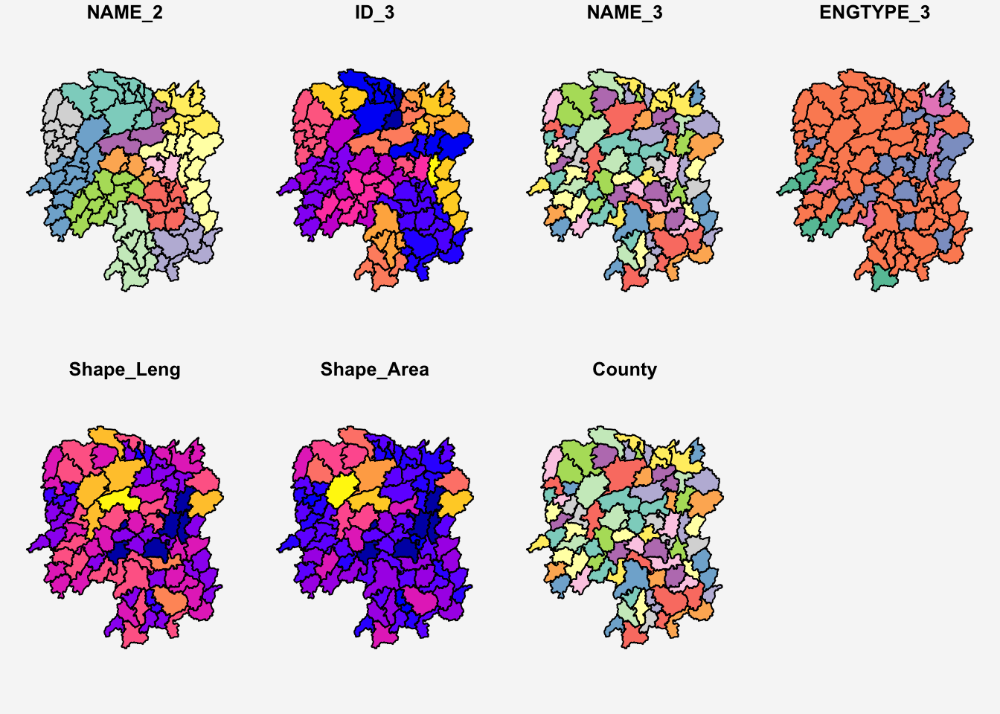
4.2 Import CSV File
Next, we will import Hunan_2012.csv into R by using read_csv() of readr package. The output is R dataframe class.
hunan2012 <- read_csv("data/aspatial/Hunan_2012.csv")kable(head(hunan2012))| County | City | avg_wage | deposite | FAI | Gov_Rev | Gov_Exp | GDP | GDPPC | GIO | Loan | NIPCR | Bed | Emp | EmpR | EmpRT | Pri_Stu | Sec_Stu | Household | Household_R | NOIP | Pop_R | RSCG | Pop_T | Agri | Service | Disp_Inc | RORP | ROREmp |
|---|---|---|---|---|---|---|---|---|---|---|---|---|---|---|---|---|---|---|---|---|---|---|---|---|---|---|---|---|
| Anhua | Yiyang | 30544 | 10967.0 | 6831.7 | 456.72 | 2703.0 | 13225.0 | 14567 | 9276.9 | 3954.9 | 3528.3 | 2718 | 494.31 | 441.4 | 338.0 | 54.175 | 32.830 | 290.4 | 234.5 | 101 | 670.3 | 5760.60 | 910.8 | 4942.253 | 5414.5 | 12373 | 0.7359464 | 0.8929619 |
| Anren | Chenzhou | 28058 | 4598.9 | 6386.1 | 220.57 | 1454.7 | 4941.2 | 12761 | 4189.2 | 2555.3 | 3271.8 | 970 | 290.82 | 255.4 | 99.4 | 33.171 | 17.505 | 104.6 | 121.9 | 34 | 243.2 | 2386.40 | 388.7 | 2357.764 | 3814.1 | 16072 | 0.6256753 | 0.8782065 |
| Anxiang | Changde | 31935 | 5517.2 | 3541.0 | 243.64 | 1779.5 | 12482.0 | 23667 | 5108.9 | 2806.9 | 7693.7 | 1931 | 336.39 | 270.5 | 205.9 | 19.584 | 17.819 | 148.1 | 135.4 | 53 | 346.0 | 3957.90 | 528.3 | 4524.410 | 14100.0 | 16610 | 0.6549309 | 0.8041262 |
| Baojing | Hunan West | 30843 | 2250.0 | 1005.4 | 192.59 | 1379.1 | 4087.9 | 14563 | 3623.5 | 1253.7 | 4191.3 | 927 | 195.17 | 145.6 | 116.4 | 19.249 | 11.831 | 73.2 | 69.9 | 18 | 184.1 | 768.04 | 281.3 | 1118.561 | 541.8 | 13455 | 0.6544614 | 0.7460163 |
| Chaling | Zhuzhou | 31251 | 8241.4 | 6508.4 | 620.19 | 1947.0 | 11585.0 | 20078 | 9157.7 | 4287.4 | 3887.7 | 1449 | 330.29 | 299.0 | 154.0 | 33.906 | 20.548 | 148.7 | 139.4 | 106 | 301.6 | 4009.50 | 578.4 | 3793.550 | 5444.0 | 20461 | 0.5214385 | 0.9052651 |
| Changning | Hengyang | 28518 | 10860.0 | 7920.0 | 769.86 | 2631.6 | 19886.0 | 24418 | 37392.0 | 4242.8 | 9528.0 | 3605 | 548.61 | 415.1 | 273.7 | 81.831 | 44.485 | 211.2 | 211.7 | 115 | 448.2 | 5220.40 | 816.3 | 6430.782 | 13074.6 | 20868 | 0.5490628 | 0.7566395 |
4.3 Perform Relational Join
The code chunk below will be used to update the attribute table of hunan’s SpatialPolygonsDataFrame with the attribute fields of hunan2012 dataframe. This is performed by using left_join() of dplyr package.
After performing a left join, we remove unnecessary columns and retain only ‘NAME_2’, ‘ID_3’, ‘NAME_3’, ‘ENGTYPE_3’, ‘County’, and ‘GDPPC’ for further analysis.
hunan <- left_join(hunan,hunan2012,
by = "County")
kable(head(hunan,5))| NAME_2 | ID_3 | NAME_3 | ENGTYPE_3 | Shape_Leng | Shape_Area | County | City | avg_wage | deposite | FAI | Gov_Rev | Gov_Exp | GDP | GDPPC | GIO | Loan | NIPCR | Bed | Emp | EmpR | EmpRT | Pri_Stu | Sec_Stu | Household | Household_R | NOIP | Pop_R | RSCG | Pop_T | Agri | Service | Disp_Inc | RORP | ROREmp | geometry |
|---|---|---|---|---|---|---|---|---|---|---|---|---|---|---|---|---|---|---|---|---|---|---|---|---|---|---|---|---|---|---|---|---|---|---|---|
| Changde | 21098 | Anxiang | County | 1.869074 | 0.1005619 | Anxiang | Changde | 31935 | 5517.2 | 3541.0 | 243.64 | 1779.5 | 12482.0 | 23667 | 5108.9 | 2806.9 | 7693.7 | 1931 | 336.39 | 270.5 | 205.9 | 19.584 | 17.819 | 148.1 | 135.4 | 53 | 346.0 | 3957.9 | 528.3 | 4524.41 | 14100 | 16610 | 0.6549309 | 0.8041262 | POLYGON ((112.0625 29.75523… |
| Changde | 21100 | Hanshou | County | 2.360691 | 0.1997875 | Hanshou | Changde | 32265 | 7979.0 | 8665.0 | 386.13 | 2062.4 | 15788.0 | 20981 | 13491.0 | 4550.0 | 8269.9 | 2560 | 456.78 | 388.8 | 246.7 | 42.097 | 33.029 | 240.2 | 208.7 | 95 | 553.2 | 4460.5 | 804.6 | 6545.35 | 17727 | 18925 | 0.6875466 | 0.8511756 | POLYGON ((112.2288 29.11684… |
| Changde | 21101 | Jinshi | County City | 1.425620 | 0.0530241 | Jinshi | Changde | 28692 | 4581.7 | 4777.0 | 373.31 | 1148.4 | 8706.9 | 34592 | 10935.0 | 2242.0 | 8169.9 | 848 | 122.78 | 82.1 | 61.7 | 8.723 | 7.592 | 81.9 | 43.7 | 77 | 92.4 | 3683.0 | 251.8 | 2562.46 | 7525 | 19498 | 0.3669579 | 0.6686757 | POLYGON ((111.8927 29.6013,… |
| Changde | 21102 | Li | County | 3.474324 | 0.1890812 | Li | Changde | 32541 | 13487.0 | 16066.0 | 709.61 | 2459.5 | 20322.0 | 24473 | 18402.0 | 6748.0 | 8377.0 | 2038 | 513.44 | 426.8 | 227.1 | 38.975 | 33.938 | 268.5 | 256.0 | 96 | 539.7 | 7110.2 | 832.5 | 7562.34 | 53160 | 18985 | 0.6482883 | 0.8312558 | POLYGON ((111.3731 29.94649… |
| Changde | 21103 | Linli | County | 2.289506 | 0.1145036 | Linli | Changde | 32667 | 564.1 | 7781.2 | 336.86 | 1538.7 | 10355.0 | 25554 | 8214.0 | 358.0 | 8143.1 | 1440 | 307.36 | 272.2 | 100.8 | 23.286 | 18.943 | 129.1 | 157.2 | 99 | 246.6 | 3604.9 | 409.3 | 3583.91 | 7031 | 18604 | 0.6024921 | 0.8856065 | POLYGON ((111.6324 29.76288… |
class(hunan)[1] "sf" "data.frame"5 Visualize Regional Development Indicator
Now, we are going to prepare a basemap and a choropleth map showing the distribution of GDP Per Capita (GDPPC) 2012 by using tmap package:
tm_shape(hunan) +
tm_polygons(fill = "GDPPC") +
tm_text("NAME_3", size=0.6)+
tm_title("2012 Hunan GDP Per Capita",
position = tm_pos_out("center", "top", "center")) +
tm_credits("Changsha had the highest GDP per capita",
position = c("center", "top"), size = 0.8, just = "center",
bg.color = NA, fontface = "italic") +
tm_layout(
legend.position = c("left", "bottom"),
bg.color = "#f6f6f6",
frame = FALSE)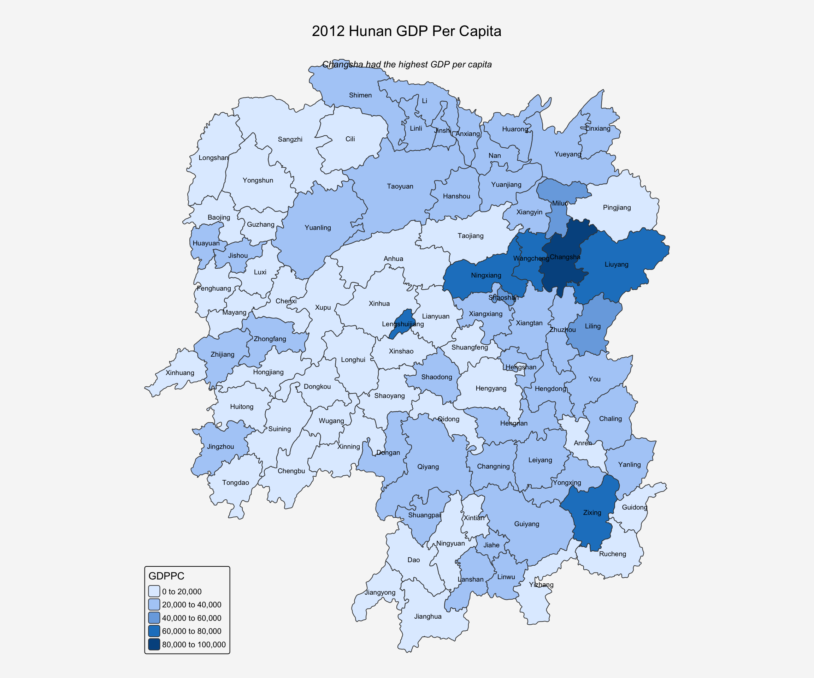
As shown in the graph above, Changsha had the highest GDP per capita in Hunan in 2012.
6 Compute Contiguity Spatial Weights
In this section, we will learn how to use poly2nb() of spdep package to compute contiguity weight matrices for the study area. This function builds a neighbours list based on regions with contiguous boundaries, that is sharing one or more boundary point.
In poly2nb(), the “queen” argument of takes TRUE or FALSE as options. If you do not specify this argument the default is set to TRUE, that is, if you don’t specify queen = FALSE this function will return a list of first order neighbours using the Queen criteria.
6.1 Compute (QUEEN) contiguity based neighbors
A Queen contiguity weight matrix is a type of spatial weights matrix used in spatial analysis to define neighborhood relationships between spatial units (e.g., polygons like counties or districts).It’s named after the Queen’s move in chess, where a queen can move in all 8 directions vertically, horizontally, and diagonally.
Queen contiguity defines neighbors as polygons that share either an edge OR a vertex (corner). So, even if two polygons only touch at a point, they are still considered neighbors under Queen contiguity!
The code chunk below is used to compute Queen contiguity weight matrix:
wm_q <- poly2nb(hunan,queen=TRUE)
summary(wm_q)Neighbour list object:
Number of regions: 88
Number of nonzero links: 448
Percentage nonzero weights: 5.785124
Average number of links: 5.090909
Link number distribution:
1 2 3 4 5 6 7 8 9 11
2 2 12 16 24 14 11 4 2 1
2 least connected regions:
30 65 with 1 link
1 most connected region:
85 with 11 links
How to read the result?
The summary report above shows that:
- There are total 88 area units/conties in Hunan.
- Across all units, there are 448 total neighbor connections, where one region is considered a neighbor of another.
- Only around 5.8% (448 / (88*88) ) of all possible region-to-region connections are considered neighbors
- On average, each region has around 5 neighbors (448/88) under Queen contiguity.
- The Link number distribution says 2 regions (Region 30 & 65) has only 1 neighbor, 2 regions has 2 neighbors,..,1 region (Region 85) has 11 neighbors
For each polygon in our polygon object, wm_q lists all neighboring polygons. For example, to see the neighbors for the first polygon in the object:
wm_q[[1]][1] 2 3 4 57 85It means that Polygon 1 has 5 neighbors. The numbers represent the polygon IDs as stored in hunan SpatialPolygonsDataFrame class.
We can retrive the county name of Polygon ID=1 by using the code chunk below:
hunan$County[1][1] "Anxiang"The output reveals that Polygon ID=1 is Anxiang county.
To reveal the county names of the five neighboring polygons, the code chunk will be used:
hunan$County[c(2,3,4,57,85)][1] "Hanshou" "Jinshi" "Li" "Nan" "Taoyuan"We can retrieve the GDPPC of these five countries by using the code chunk below:
nb1 <- wm_q[[1]]
nb1 <- hunan$GDPPC[nb1]
nb1[1] 20981 34592 24473 21311 22879The printed output above shows that the GDPPC of the five nearest neighbours based on Queen’s method are 20981, 34592, 24473, 21311 and 22879 respectively.
We can also display the complete weight matrix by using str():
str(wm_q)List of 88
$ : int [1:5] 2 3 4 57 85
$ : int [1:5] 1 57 58 78 85
$ : int [1:4] 1 4 5 85
$ : int [1:4] 1 3 5 6
$ : int [1:4] 3 4 6 85
$ : int [1:5] 4 5 69 75 85
$ : int [1:4] 67 71 74 84
$ : int [1:7] 9 46 47 56 78 80 86
$ : int [1:6] 8 66 68 78 84 86
$ : int [1:8] 16 17 19 20 22 70 72 73
$ : int [1:3] 14 17 72
$ : int [1:5] 13 60 61 63 83
$ : int [1:4] 12 15 60 83
$ : int [1:3] 11 15 17
$ : int [1:4] 13 14 17 83
$ : int [1:5] 10 17 22 72 83
$ : int [1:7] 10 11 14 15 16 72 83
$ : int [1:5] 20 22 23 77 83
$ : int [1:6] 10 20 21 73 74 86
$ : int [1:7] 10 18 19 21 22 23 82
$ : int [1:5] 19 20 35 82 86
$ : int [1:5] 10 16 18 20 83
$ : int [1:7] 18 20 38 41 77 79 82
$ : int [1:5] 25 28 31 32 54
$ : int [1:5] 24 28 31 33 81
$ : int [1:4] 27 33 42 81
$ : int [1:3] 26 29 42
$ : int [1:5] 24 25 33 49 54
$ : int [1:3] 27 37 42
$ : int 33
$ : int [1:8] 24 25 32 36 39 40 56 81
$ : int [1:8] 24 31 50 54 55 56 75 85
$ : int [1:5] 25 26 28 30 81
$ : int [1:3] 36 45 80
$ : int [1:6] 21 41 47 80 82 86
$ : int [1:6] 31 34 40 45 56 80
$ : int [1:4] 29 42 43 44
$ : int [1:4] 23 44 77 79
$ : int [1:5] 31 40 42 43 81
$ : int [1:6] 31 36 39 43 45 79
$ : int [1:6] 23 35 45 79 80 82
$ : int [1:7] 26 27 29 37 39 43 81
$ : int [1:6] 37 39 40 42 44 79
$ : int [1:4] 37 38 43 79
$ : int [1:6] 34 36 40 41 79 80
$ : int [1:3] 8 47 86
$ : int [1:5] 8 35 46 80 86
$ : int [1:5] 50 51 52 53 55
$ : int [1:4] 28 51 52 54
$ : int [1:5] 32 48 52 54 55
$ : int [1:3] 48 49 52
$ : int [1:5] 48 49 50 51 54
$ : int [1:3] 48 55 75
$ : int [1:6] 24 28 32 49 50 52
$ : int [1:5] 32 48 50 53 75
$ : int [1:7] 8 31 32 36 78 80 85
$ : int [1:6] 1 2 58 64 76 85
$ : int [1:5] 2 57 68 76 78
$ : int [1:4] 60 61 87 88
$ : int [1:4] 12 13 59 61
$ : int [1:7] 12 59 60 62 63 77 87
$ : int [1:3] 61 77 87
$ : int [1:4] 12 61 77 83
$ : int [1:2] 57 76
$ : int 76
$ : int [1:5] 9 67 68 76 84
$ : int [1:4] 7 66 76 84
$ : int [1:5] 9 58 66 76 78
$ : int [1:3] 6 75 85
$ : int [1:3] 10 72 73
$ : int [1:3] 7 73 74
$ : int [1:5] 10 11 16 17 70
$ : int [1:5] 10 19 70 71 74
$ : int [1:6] 7 19 71 73 84 86
$ : int [1:6] 6 32 53 55 69 85
$ : int [1:7] 57 58 64 65 66 67 68
$ : int [1:7] 18 23 38 61 62 63 83
$ : int [1:7] 2 8 9 56 58 68 85
$ : int [1:7] 23 38 40 41 43 44 45
$ : int [1:8] 8 34 35 36 41 45 47 56
$ : int [1:6] 25 26 31 33 39 42
$ : int [1:5] 20 21 23 35 41
$ : int [1:9] 12 13 15 16 17 18 22 63 77
$ : int [1:6] 7 9 66 67 74 86
$ : int [1:11] 1 2 3 5 6 32 56 57 69 75 ...
$ : int [1:9] 8 9 19 21 35 46 47 74 84
$ : int [1:4] 59 61 62 88
$ : int [1:2] 59 87
- attr(*, "class")= chr "nb"
- attr(*, "region.id")= chr [1:88] "1" "2" "3" "4" ...
- attr(*, "call")= language poly2nb(pl = hunan, queen = TRUE)
- attr(*, "type")= chr "queen"
- attr(*, "snap")= num 9e-08
- attr(*, "sym")= logi TRUE
- attr(*, "ncomp")=List of 2
..$ nc : int 1
..$ comp.id: int [1:88] 1 1 1 1 1 1 1 1 1 1 ...6.2 Compute (ROOK) contiguity based neighbors
Unlike Queen contiguity, Rook contiguity defines neighbors more restrictively. It only considers units as neighbors if they share a common edge (border), not just a corner. This is similar to how a rook moves in chess: only horizontally or vertically, not diagonally.
The code chunk below is used to compute Rook contiguity weight matrix:
wm_r <- poly2nb(hunan, queen=FALSE)
summary(wm_r)Neighbour list object:
Number of regions: 88
Number of nonzero links: 440
Percentage nonzero weights: 5.681818
Average number of links: 5
Link number distribution:
1 2 3 4 5 6 7 8 9 10
2 2 12 20 21 14 11 3 2 1
2 least connected regions:
30 65 with 1 link
1 most connected region:
85 with 10 links
How to read the result?
The summary report above shows that:
- There are total 88 area units/conties in Hunan.
- Across all units, there are 440 total neighbor connections, where one region is considered a neighbor of another.
- Only around 5.8% (440 / (88*88) ) of all possible region-to-region connections are considered neighbors
- On average, each region has around 5 neighbors (440/88) under ROOK contiguity.
- The Link number distribution says 2 regions (Region 30 & 65) has only 1 neighbor, 2 regions has 2 neighbors,..,1 region (Region 85) has 10 neighbors
6.3 Comparison between Queen & Rook Contiguity
Queen finds more neighbors overall because it includes shared corners (vertices) in addition to shared edges. Rook is more restrictive, including only shared edges, so some “corner-only” neighbors from Queen are excluded here:
- Only 8 total links were dropped in the Rook version.
- Region 85 (the most connected) dropped from 11 to 10 neighbors.
- This suggests that Hunan counties are mostly connected by edges, not just corners, so the choice between Rook and Queen may not drastically change the results.
6.4 Visualize Contiguity Weights
A connectivity graph takes a point and displays a line to each neighboring point. The most typically method to turn a polygon into a point is to use its centroids (the geometric center of the shape). We will calculate these in the sf package before moving onto the graphs.
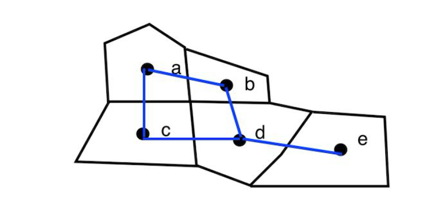
6.4.1 Getting Latitude and Longitude of Polygon Centroids
It will be a little more complicated than just running st_centroid() on the sf object, since it returns geometry objects, not just plain coordinate numbers (X,Y). To build a data frame of X (longitude) and Y (latitude) values, we need to extract those numbers out of the geometry.
To do this we will use a mapping function map_dbl() of purrr package. The mapping function applies a given function to each element of a vector/list and returns a vector/list of the same length:
- The input vector will be the geometry column of
us.bound. - The function will be
st_centroid()
6.4.1.1 Extract X (longitude)
The code below means for each polygon in us.bound$geometry:
- Get the centroid:
st_centroid(.x) - Extract the first coordinate (longitude) using
[[1]], since longitude is the first value in each centroid
longitude <- map_dbl(hunan$geometry, ~st_centroid(.x)[[1]])6.4.1.1 Extract Y (latitude)
latitude <- map_dbl(hunan$geometry, ~st_centroid(.x)[[2]])6.4.1.2 Combine X & Y
Now that we have latitude and longitude, we use cbind to put longitude and latitude into the same object:
coords <- cbind(longitude, latitude)kable(head(coords,5))| longitude | latitude |
|---|---|
| 112.1531 | 29.44362 |
| 112.0372 | 28.86489 |
| 111.8917 | 29.47107 |
| 111.7031 | 29.74499 |
| 111.6138 | 29.49258 |
6.5 Plot Queen Contiguity Based Neighbours Map
par(bg="#f6f6f6")
plot(hunan$geometry, border="grey")
plot(wm_q, coords, pch = 19, cex = 0.6, add = TRUE, col= "red")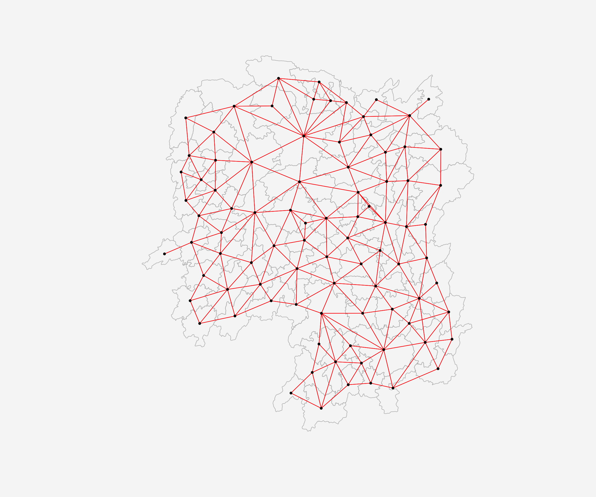
6.6 Plot Rook Contiguity Based Neighbours Map
par(bg="#f6f6f6")
plot(hunan$geometry, border="grey")
plot(wm_q, coords, pch = 19, cex = 0.6, add = TRUE, col= "blue", lty = 2)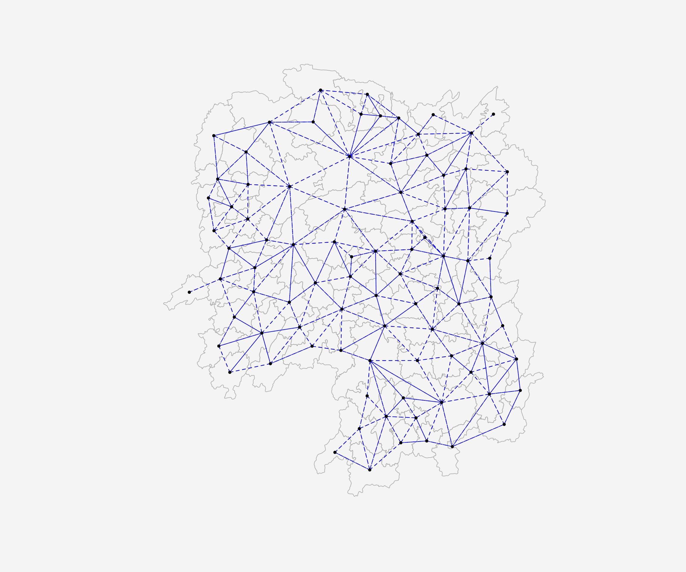
6.7 Overlay Both Queen and Rook Contiguity on a Single Map
par(bg = "#f6f6f6")
plot(hunan$geometry, border = "grey", main = "Queen and Rook Contiguity")
plot(wm_q, coords, add = TRUE, col = "red", lwd = 1)
plot(wm_r, coords, add = TRUE, col = "blue", lwd = 1, lty = 2)
points(coords, pch = 19, cex = 0.5)
legend("topright",
legend = c("Queen", "Rook"),
col = c("red", "blue"),
lty = c(1, 2), #line types 1=solid (Queen), 2=dashed (Rook)
lwd = 1,
bty = "n") # border type: no border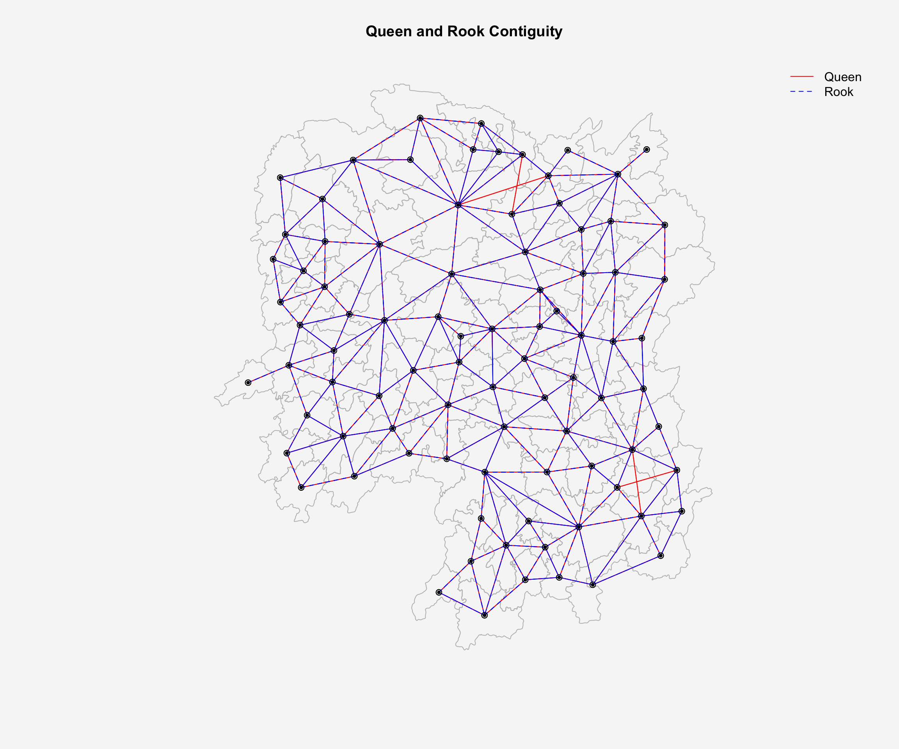
7 Compute Distance Based Neighbours
In this section, we will learn how to derive distance-based weight matrices by using dnearneigh() of spdep package.
The function defines neighbors based on distance, not on shared borders (like Queen or Rook). The function identifies neighbours of region points by Euclidean distance with a distance band with lower d1= and upper d2= bounds controlled by the bounds= argument.
The key arguments
| Argument | Description |
|---|---|
x |
A matrix of coordinates (usually centroids) or an sf/Spatial object |
d1 |
Minimum distance (lower bound): neighbors closer than this will be ignored |
d2 |
Maximum distance (upper bound): neighbors farther than this will be ignored |
bounds |
Controls how strictly the distances are interpreted (open or closed interval) |
longlat = TRUE |
If unprojected coordinates are used and either specified in the coordinates object x or with x as a two column matrix and longlat=TRUE, great circle distances in km will be calculated assuming the WGS84 reference ellipsoid. Only needed for longitude/latitude data (EPSG:4326 WGS84) |
7.1 Determine the cut-off distance
Firstly, we need to determine the upper limit for distance band by using the steps below:
- Return a matrix with the indices of points belonging to the set of the k nearest neighbours of each other by using knearneigh() of spdep.
- Convert the knn object returned by knearneigh() into a neighbours list of class nb with a list of integer vectors containing neighbour region number ids by using knn2nb().
- Return the length of neighbour relationship edges by using nbdists() of spdep. The function returns in the units of the coordinates if the coordinates are projected, in km otherwise.
- Remove the list structure of the returned object by using unlist().
k1 <- knn2nb(knearneigh(coords))
k1dists <- unlist(nbdists(k1, coords, longlat = TRUE))
summary(k1dists) Min. 1st Qu. Median Mean 3rd Qu. Max.
24.79 32.57 38.01 39.07 44.52 61.79 The summary report shows that the largest first nearest neighbour distance is 61.79 km, so using this as the upper threshold gives certainty that all units will have at least one neighbour.
7.2 Compute fixed distance weight matrix
Now, we will compute the distance weight matrix by using dnearneigh() as shown in the code chunk below:
wm_d62 <- dnearneigh(coords, 0, 62, longlat = TRUE)
wm_d62Neighbour list object:
Number of regions: 88
Number of nonzero links: 324
Percentage nonzero weights: 4.183884
Average number of links: 3.681818
How to read the result?
The summary above shows that:
- There are 88 counties in Hunan
- There are 324 neighbor relationships where counties are within 62km of each other (Each link connects two counties bidirectionally)
- Only 4.18% (324/88*88) of all possible county pairs are neighbors
- Each county has an average of 3.68 (324/88) neighbors within 62km
Next, we use str() to display the content of wm_d62 weight matrix:
str(wm_d62)List of 88
$ : int [1:5] 3 4 5 57 64
$ : int [1:4] 57 58 78 85
$ : int [1:4] 1 4 5 57
$ : int [1:3] 1 3 5
$ : int [1:4] 1 3 4 85
$ : int 69
$ : int [1:2] 67 84
$ : int [1:4] 9 46 47 78
$ : int [1:4] 8 46 68 84
$ : int [1:4] 16 22 70 72
$ : int [1:3] 14 17 72
$ : int [1:5] 13 60 61 63 83
$ : int [1:4] 12 15 60 83
$ : int [1:2] 11 17
$ : int 13
$ : int [1:4] 10 17 22 83
$ : int [1:3] 11 14 16
$ : int [1:3] 20 22 63
$ : int [1:5] 20 21 73 74 82
$ : int [1:5] 18 19 21 22 82
$ : int [1:6] 19 20 35 74 82 86
$ : int [1:4] 10 16 18 20
$ : int [1:3] 41 77 82
$ : int [1:4] 25 28 31 54
$ : int [1:4] 24 28 33 81
$ : int [1:4] 27 33 42 81
$ : int [1:2] 26 29
$ : int [1:6] 24 25 33 49 52 54
$ : int [1:2] 27 37
$ : int 33
$ : int [1:2] 24 36
$ : int 50
$ : int [1:5] 25 26 28 30 81
$ : int [1:3] 36 45 80
$ : int [1:6] 21 41 46 47 80 82
$ : int [1:5] 31 34 45 56 80
$ : int [1:2] 29 42
$ : int [1:3] 44 77 79
$ : int [1:4] 40 42 43 81
$ : int [1:3] 39 45 79
$ : int [1:5] 23 35 45 79 82
$ : int [1:5] 26 37 39 43 81
$ : int [1:3] 39 42 44
$ : int [1:2] 38 43
$ : int [1:6] 34 36 40 41 79 80
$ : int [1:5] 8 9 35 47 86
$ : int [1:5] 8 35 46 80 86
$ : int [1:5] 50 51 52 53 55
$ : int [1:4] 28 51 52 54
$ : int [1:6] 32 48 51 52 54 55
$ : int [1:4] 48 49 50 52
$ : int [1:6] 28 48 49 50 51 54
$ : int [1:2] 48 55
$ : int [1:5] 24 28 49 50 52
$ : int [1:4] 48 50 53 75
$ : int 36
$ : int [1:5] 1 2 3 58 64
$ : int [1:5] 2 57 64 66 68
$ : int [1:3] 60 87 88
$ : int [1:4] 12 13 59 61
$ : int [1:5] 12 60 62 63 87
$ : int [1:4] 61 63 77 87
$ : int [1:5] 12 18 61 62 83
$ : int [1:4] 1 57 58 76
$ : int 76
$ : int [1:5] 58 67 68 76 84
$ : int [1:2] 7 66
$ : int [1:4] 9 58 66 84
$ : int [1:2] 6 75
$ : int [1:3] 10 72 73
$ : int [1:2] 73 74
$ : int [1:3] 10 11 70
$ : int [1:4] 19 70 71 74
$ : int [1:5] 19 21 71 73 86
$ : int [1:2] 55 69
$ : int [1:3] 64 65 66
$ : int [1:3] 23 38 62
$ : int [1:2] 2 8
$ : int [1:4] 38 40 41 45
$ : int [1:5] 34 35 36 45 47
$ : int [1:5] 25 26 33 39 42
$ : int [1:6] 19 20 21 23 35 41
$ : int [1:4] 12 13 16 63
$ : int [1:4] 7 9 66 68
$ : int [1:2] 2 5
$ : int [1:4] 21 46 47 74
$ : int [1:4] 59 61 62 88
$ : int [1:2] 59 87
- attr(*, "class")= chr "nb"
- attr(*, "region.id")= chr [1:88] "1" "2" "3" "4" ...
- attr(*, "call")= language dnearneigh(x = coords, d1 = 0, d2 = 62, longlat = TRUE)
- attr(*, "dnn")= num [1:2] 0 62
- attr(*, "bounds")= chr [1:2] "GE" "LE"
- attr(*, "nbtype")= chr "distance"
- attr(*, "sym")= logi TRUE
- attr(*, "ncomp")=List of 2
..$ nc : int 1
..$ comp.id: int [1:88] 1 1 1 1 1 1 1 1 1 1 ...Another way to display the structure of the weight matrix is to combine table() and card() of spdep.
It means that Anhua has one neighbor & Anren has 4 neighbours:
table(hunan$County, card(wm_d62))
1 2 3 4 5 6
Anhua 1 0 0 0 0 0
Anren 0 0 0 1 0 0
Anxiang 0 0 0 0 1 0
Baojing 0 0 0 0 1 0
Chaling 0 0 1 0 0 0
Changning 0 0 1 0 0 0
Changsha 0 0 0 1 0 0
Chengbu 0 1 0 0 0 0
Chenxi 0 0 0 1 0 0
Cili 0 1 0 0 0 0
Dao 0 0 0 1 0 0
Dongan 0 0 1 0 0 0
Dongkou 0 0 0 1 0 0
Fenghuang 0 0 0 1 0 0
Guidong 0 0 1 0 0 0
Guiyang 0 0 0 1 0 0
Guzhang 0 0 0 0 0 1
Hanshou 0 0 0 1 0 0
Hengdong 0 0 0 0 1 0
Hengnan 0 0 0 0 1 0
Hengshan 0 0 0 0 0 1
Hengyang 0 0 0 0 0 1
Hongjiang 0 0 0 0 1 0
Huarong 0 0 0 1 0 0
Huayuan 0 0 0 1 0 0
Huitong 0 0 0 1 0 0
Jiahe 0 0 0 0 1 0
Jianghua 0 0 1 0 0 0
Jiangyong 0 1 0 0 0 0
Jingzhou 0 1 0 0 0 0
Jinshi 0 0 0 1 0 0
Jishou 0 0 0 0 0 1
Lanshan 0 0 0 1 0 0
Leiyang 0 0 0 1 0 0
Lengshuijiang 0 0 1 0 0 0
Li 0 0 1 0 0 0
Lianyuan 0 0 0 0 1 0
Liling 0 1 0 0 0 0
Linli 0 0 0 1 0 0
Linwu 0 0 0 1 0 0
Linxiang 1 0 0 0 0 0
Liuyang 0 1 0 0 0 0
Longhui 0 0 1 0 0 0
Longshan 0 1 0 0 0 0
Luxi 0 0 0 0 1 0
Mayang 0 0 0 0 0 1
Miluo 0 0 0 0 1 0
Nan 0 0 0 0 1 0
Ningxiang 0 0 0 1 0 0
Ningyuan 0 0 0 0 1 0
Pingjiang 0 1 0 0 0 0
Qidong 0 0 1 0 0 0
Qiyang 0 0 1 0 0 0
Rucheng 0 1 0 0 0 0
Sangzhi 0 1 0 0 0 0
Shaodong 0 0 0 0 1 0
Shaoshan 0 0 0 0 1 0
Shaoyang 0 0 0 1 0 0
Shimen 1 0 0 0 0 0
Shuangfeng 0 0 0 0 0 1
Shuangpai 0 0 0 1 0 0
Suining 0 0 0 0 1 0
Taojiang 0 1 0 0 0 0
Taoyuan 0 1 0 0 0 0
Tongdao 0 1 0 0 0 0
Wangcheng 0 0 0 1 0 0
Wugang 0 0 1 0 0 0
Xiangtan 0 0 0 1 0 0
Xiangxiang 0 0 0 0 1 0
Xiangyin 0 0 0 1 0 0
Xinhua 0 0 0 0 1 0
Xinhuang 1 0 0 0 0 0
Xinning 0 1 0 0 0 0
Xinshao 0 0 0 0 0 1
Xintian 0 0 0 0 1 0
Xupu 0 1 0 0 0 0
Yanling 0 0 1 0 0 0
Yizhang 1 0 0 0 0 0
Yongshun 0 0 0 1 0 0
Yongxing 0 0 0 1 0 0
You 0 0 0 1 0 0
Yuanjiang 0 0 0 0 1 0
Yuanling 1 0 0 0 0 0
Yueyang 0 0 1 0 0 0
Zhijiang 0 0 0 0 1 0
Zhongfang 0 0 0 1 0 0
Zhuzhou 0 0 0 0 1 0
Zixing 0 0 1 0 0 0Next we use the code below check the connected components:
n.comp.nb(): Analyzes the connectivity structure of the neighbor listn_comp$nc: Returns the number of connected components- If
n_comp$nc = 1: All 88 counties form one connected network, meaning we can reach any county from any other county through neighbor links. This is ideal for most spatial analysis - If
n_comp$nc > 1: Hunan are split into separate groups with some counties or comp isolated from others. This can be problematic for spatial autocorrelation analysis.
- If
n_comp <- n.comp.nb(wm_d62)
n_comp$nc[1] 1table(n_comp$comp.id)
1
88 The results above show Hunan itself is one connected component.
7.3 Plot Fixed Distance Weight matrix
par(bg="#f6f6f6")
plot(hunan$geometry,border = "grey")
plot(wm_d62,coords,add=TRUE)
plot(k1, coords, add=TRUE, col="red", length=0.08)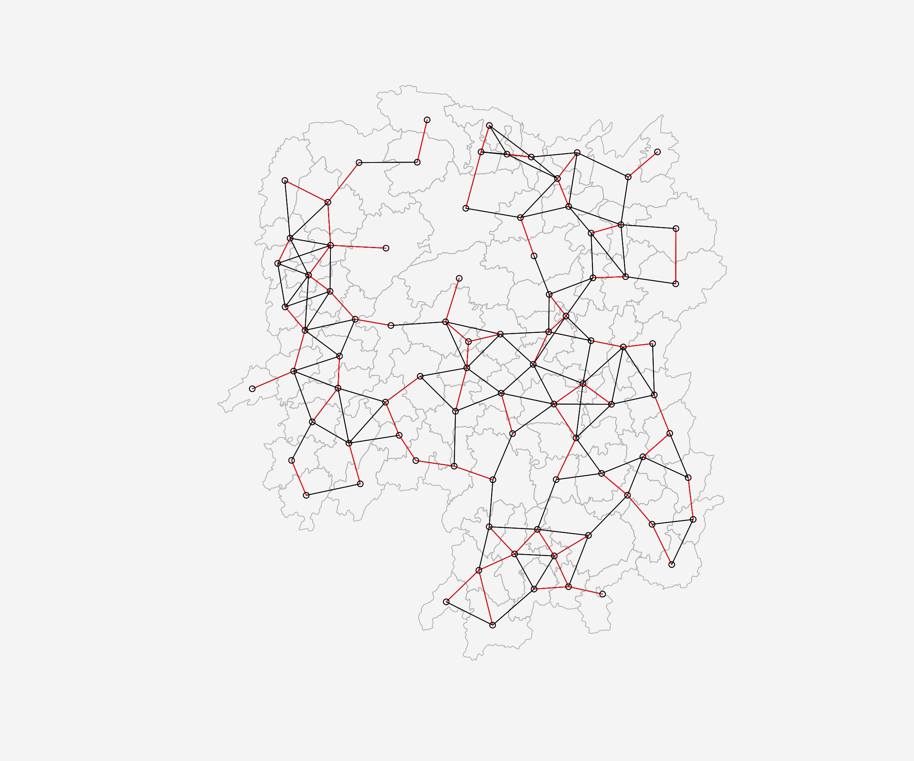
The red lines show the links of 1st nearest neighbours and the black lines show the links of neighbours within the cut-off distance of 62km.
Alternatively, we can plot both of them next to each other by using the code chunk below:
par(bg="#f6f6f6",mfrow=c(1,2))
plot(hunan$geometry, border="grey", main="1st nearest neighbours")
plot(k1, coords, add=TRUE, col="red", length=0.08)
plot(hunan$geometry, border="grey", main="Distance link")
plot(wm_d62, coords, add=TRUE, pch = 19, cex = 0.6)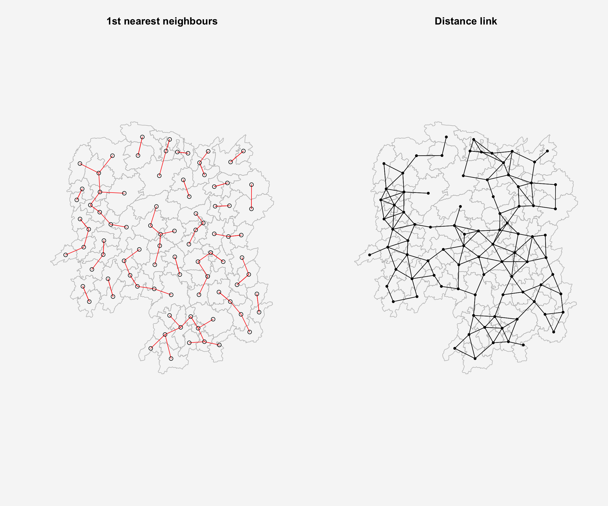
7.4 Compute adaptive distance weight matrix
One of the characteristics of fixed distance weight matrix is that more densely settled areas (usually the urban areas) tend to have more neighbours and the less densely settled areas (usually the rural counties) tend to have lesser neighbours.
Having many neighbours smoothes the neighbour relationship across more neighbours:
Urban areas: Strong smoothing effect (many neighbors influence each other)
Rural areas: Less smoothing (few neighbors, more isolated effects)
-> This creates uneven spatial smoothing across the study area.
It is possible to control the numbers of neighbours directly using k-nearest neighbours, either accepting asymmetric neighbours or imposing symmetry as shown in the code chunk below.
# find the 6 nearest neighbors for each county
knn6 <- knn2nb(knearneigh(coords, k=6))
knn6Neighbour list object:
Number of regions: 88
Number of nonzero links: 528
Percentage nonzero weights: 6.818182
Average number of links: 6
Non-symmetric neighbours listSimilarly, we can display the content of the matrix by using str():
str(knn6)List of 88
$ : int [1:6] 2 3 4 5 57 64
$ : int [1:6] 1 3 57 58 78 85
$ : int [1:6] 1 2 4 5 57 85
$ : int [1:6] 1 3 5 6 69 85
$ : int [1:6] 1 3 4 6 69 85
$ : int [1:6] 3 4 5 69 75 85
$ : int [1:6] 9 66 67 71 74 84
$ : int [1:6] 9 46 47 78 80 86
$ : int [1:6] 8 46 66 68 84 86
$ : int [1:6] 16 19 22 70 72 73
$ : int [1:6] 10 14 16 17 70 72
$ : int [1:6] 13 15 60 61 63 83
$ : int [1:6] 12 15 60 61 63 83
$ : int [1:6] 11 15 16 17 72 83
$ : int [1:6] 12 13 14 17 60 83
$ : int [1:6] 10 11 17 22 72 83
$ : int [1:6] 10 11 14 16 72 83
$ : int [1:6] 20 22 23 63 77 83
$ : int [1:6] 10 20 21 73 74 82
$ : int [1:6] 18 19 21 22 23 82
$ : int [1:6] 19 20 35 74 82 86
$ : int [1:6] 10 16 18 19 20 83
$ : int [1:6] 18 20 41 77 79 82
$ : int [1:6] 25 28 31 52 54 81
$ : int [1:6] 24 28 31 33 54 81
$ : int [1:6] 25 27 29 33 42 81
$ : int [1:6] 26 29 30 37 42 81
$ : int [1:6] 24 25 33 49 52 54
$ : int [1:6] 26 27 37 42 43 81
$ : int [1:6] 26 27 28 33 49 81
$ : int [1:6] 24 25 36 39 40 54
$ : int [1:6] 24 31 50 54 55 56
$ : int [1:6] 25 26 28 30 49 81
$ : int [1:6] 36 40 41 45 56 80
$ : int [1:6] 21 41 46 47 80 82
$ : int [1:6] 31 34 40 45 56 80
$ : int [1:6] 26 27 29 42 43 44
$ : int [1:6] 23 43 44 62 77 79
$ : int [1:6] 25 40 42 43 44 81
$ : int [1:6] 31 36 39 43 45 79
$ : int [1:6] 23 35 45 79 80 82
$ : int [1:6] 26 27 37 39 43 81
$ : int [1:6] 37 39 40 42 44 79
$ : int [1:6] 37 38 39 42 43 79
$ : int [1:6] 34 36 40 41 79 80
$ : int [1:6] 8 9 35 47 78 86
$ : int [1:6] 8 21 35 46 80 86
$ : int [1:6] 49 50 51 52 53 55
$ : int [1:6] 28 33 48 51 52 54
$ : int [1:6] 32 48 51 52 54 55
$ : int [1:6] 28 48 49 50 52 54
$ : int [1:6] 28 48 49 50 51 54
$ : int [1:6] 48 50 51 52 55 75
$ : int [1:6] 24 28 49 50 51 52
$ : int [1:6] 32 48 50 52 53 75
$ : int [1:6] 32 34 36 78 80 85
$ : int [1:6] 1 2 3 58 64 68
$ : int [1:6] 2 57 64 66 68 78
$ : int [1:6] 12 13 60 61 87 88
$ : int [1:6] 12 13 59 61 63 87
$ : int [1:6] 12 13 60 62 63 87
$ : int [1:6] 12 38 61 63 77 87
$ : int [1:6] 12 18 60 61 62 83
$ : int [1:6] 1 3 57 58 68 76
$ : int [1:6] 58 64 66 67 68 76
$ : int [1:6] 9 58 67 68 76 84
$ : int [1:6] 7 65 66 68 76 84
$ : int [1:6] 9 57 58 66 78 84
$ : int [1:6] 4 5 6 32 75 85
$ : int [1:6] 10 16 19 22 72 73
$ : int [1:6] 7 19 73 74 84 86
$ : int [1:6] 10 11 14 16 17 70
$ : int [1:6] 10 19 21 70 71 74
$ : int [1:6] 19 21 71 73 84 86
$ : int [1:6] 6 32 50 53 55 69
$ : int [1:6] 58 64 65 66 67 68
$ : int [1:6] 18 23 38 61 62 63
$ : int [1:6] 2 8 9 46 58 68
$ : int [1:6] 38 40 41 43 44 45
$ : int [1:6] 34 35 36 41 45 47
$ : int [1:6] 25 26 28 33 39 42
$ : int [1:6] 19 20 21 23 35 41
$ : int [1:6] 12 13 15 16 22 63
$ : int [1:6] 7 9 66 68 71 74
$ : int [1:6] 2 3 4 5 56 69
$ : int [1:6] 8 9 21 46 47 74
$ : int [1:6] 59 60 61 62 63 88
$ : int [1:6] 59 60 61 62 63 87
- attr(*, "region.id")= chr [1:88] "1" "2" "3" "4" ...
- attr(*, "call")= language knearneigh(x = coords, k = 6)
- attr(*, "sym")= logi FALSE
- attr(*, "type")= chr "knn"
- attr(*, "knn-k")= num 6
- attr(*, "class")= chr "nb"
- attr(*, "ncomp")=List of 2
..$ nc : int 1
..$ comp.id: int [1:88] 1 1 1 1 1 1 1 1 1 1 ...Notice that each county has six neighbours. If our goal is to study the GDPPC comparative analysis, k-nearest neighbors ensure the equal spatial smoothing between dense areas (urban) and sparse areas (rural).
7.5 Plot Adaptive Distance Weight matrix
par(bg="#f6f6f6")
plot(hunan$geometry, border="grey")
plot(knn6, coords, pch = 19, cex = 0.6, add = TRUE, col = "red")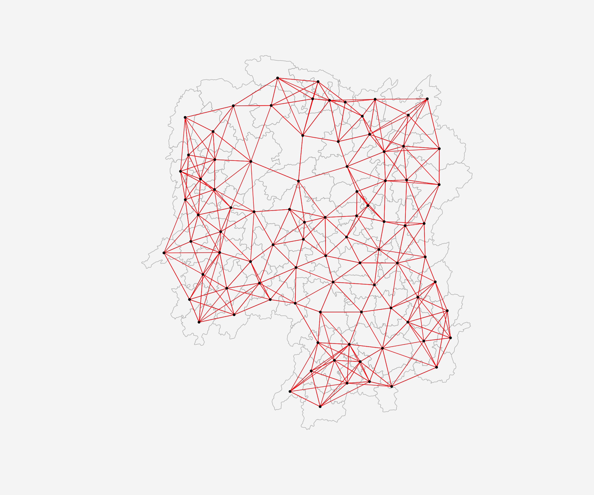
8 Compute Weights Based on IDW
In this section, we will learn how to derive a spatial weight matrix based on Inversed Distance method (weight = 1/distance to neighbor).
First, we will compute the distances between areas by using nbdists() of spdep:
It computes the distances between neighboring regions/points, given:
nb→ a neighbors list object (usually frompoly2nb()orknn2nb()).coords→ the coordinates of your points or centroids.longlat = TRUE→ TRUE if point coordinates are longitude-latitude decimal degrees, in which case distances are measured in kilometers; NULL if coords is a SpatialPoints object, the value is taken from the object itself
dist <- nbdists(wm_q, coords, longlat = TRUE)
ids <- lapply(dist, function(x) 1/(x))
ids[[1]]
[1] 0.01535405 0.03916350 0.01820896 0.02807922 0.01145113
[[2]]
[1] 0.01535405 0.01764308 0.01925924 0.02323898 0.01719350
[[3]]
[1] 0.03916350 0.02822040 0.03695795 0.01395765
[[4]]
[1] 0.01820896 0.02822040 0.03414741 0.01539065
[[5]]
[1] 0.03695795 0.03414741 0.01524598 0.01618354
[[6]]
[1] 0.015390649 0.015245977 0.021748129 0.011883901 0.009810297
[[7]]
[1] 0.01708612 0.01473997 0.01150924 0.01872915
[[8]]
[1] 0.02022144 0.03453056 0.02529256 0.01036340 0.02284457 0.01500600 0.01515314
[[9]]
[1] 0.02022144 0.01574888 0.02109502 0.01508028 0.02902705 0.01502980
[[10]]
[1] 0.02281552 0.01387777 0.01538326 0.01346650 0.02100510 0.02631658 0.01874863
[8] 0.01500046
[[11]]
[1] 0.01882869 0.02243492 0.02247473
[[12]]
[1] 0.02779227 0.02419652 0.02333385 0.02986130 0.02335429
[[13]]
[1] 0.02779227 0.02650020 0.02670323 0.01714243
[[14]]
[1] 0.01882869 0.01233868 0.02098555
[[15]]
[1] 0.02650020 0.01233868 0.01096284 0.01562226
[[16]]
[1] 0.02281552 0.02466962 0.02765018 0.01476814 0.01671430
[[17]]
[1] 0.01387777 0.02243492 0.02098555 0.01096284 0.02466962 0.01593341 0.01437996
[[18]]
[1] 0.02039779 0.02032767 0.01481665 0.01473691 0.01459380
[[19]]
[1] 0.01538326 0.01926323 0.02668415 0.02140253 0.01613589 0.01412874
[[20]]
[1] 0.01346650 0.02039779 0.01926323 0.01723025 0.02153130 0.01469240 0.02327034
[[21]]
[1] 0.02668415 0.01723025 0.01766299 0.02644986 0.02163800
[[22]]
[1] 0.02100510 0.02765018 0.02032767 0.02153130 0.01489296
[[23]]
[1] 0.01481665 0.01469240 0.01401432 0.02246233 0.01880425 0.01530458 0.01849605
[[24]]
[1] 0.02354598 0.01837201 0.02607264 0.01220154 0.02514180
[[25]]
[1] 0.02354598 0.02188032 0.01577283 0.01949232 0.02947957
[[26]]
[1] 0.02155798 0.01745522 0.02212108 0.02220532
[[27]]
[1] 0.02155798 0.02490625 0.01562326
[[28]]
[1] 0.01837201 0.02188032 0.02229549 0.03076171 0.02039506
[[29]]
[1] 0.02490625 0.01686587 0.01395022
[[30]]
[1] 0.02090587
[[31]]
[1] 0.02607264 0.01577283 0.01219005 0.01724850 0.01229012 0.01609781 0.01139438
[8] 0.01150130
[[32]]
[1] 0.01220154 0.01219005 0.01712515 0.01340413 0.01280928 0.01198216 0.01053374
[8] 0.01065655
[[33]]
[1] 0.01949232 0.01745522 0.02229549 0.02090587 0.01979045
[[34]]
[1] 0.03113041 0.03589551 0.02882915
[[35]]
[1] 0.01766299 0.02185795 0.02616766 0.02111721 0.02108253 0.01509020
[[36]]
[1] 0.01724850 0.03113041 0.01571707 0.01860991 0.02073549 0.01680129
[[37]]
[1] 0.01686587 0.02234793 0.01510990 0.01550676
[[38]]
[1] 0.01401432 0.02407426 0.02276151 0.01719415
[[39]]
[1] 0.01229012 0.02172543 0.01711924 0.02629732 0.01896385
[[40]]
[1] 0.01609781 0.01571707 0.02172543 0.01506473 0.01987922 0.01894207
[[41]]
[1] 0.02246233 0.02185795 0.02205991 0.01912542 0.01601083 0.01742892
[[42]]
[1] 0.02212108 0.01562326 0.01395022 0.02234793 0.01711924 0.01836831 0.01683518
[[43]]
[1] 0.01510990 0.02629732 0.01506473 0.01836831 0.03112027 0.01530782
[[44]]
[1] 0.01550676 0.02407426 0.03112027 0.01486508
[[45]]
[1] 0.03589551 0.01860991 0.01987922 0.02205991 0.02107101 0.01982700
[[46]]
[1] 0.03453056 0.04033752 0.02689769
[[47]]
[1] 0.02529256 0.02616766 0.04033752 0.01949145 0.02181458
[[48]]
[1] 0.02313819 0.03370576 0.02289485 0.01630057 0.01818085
[[49]]
[1] 0.03076171 0.02138091 0.02394529 0.01990000
[[50]]
[1] 0.01712515 0.02313819 0.02551427 0.02051530 0.02187179
[[51]]
[1] 0.03370576 0.02138091 0.02873854
[[52]]
[1] 0.02289485 0.02394529 0.02551427 0.02873854 0.03516672
[[53]]
[1] 0.01630057 0.01979945 0.01253977
[[54]]
[1] 0.02514180 0.02039506 0.01340413 0.01990000 0.02051530 0.03516672
[[55]]
[1] 0.01280928 0.01818085 0.02187179 0.01979945 0.01882298
[[56]]
[1] 0.01036340 0.01139438 0.01198216 0.02073549 0.01214479 0.01362855 0.01341697
[[57]]
[1] 0.028079221 0.017643082 0.031423501 0.029114131 0.013520292 0.009903702
[[58]]
[1] 0.01925924 0.03142350 0.02722997 0.01434859 0.01567192
[[59]]
[1] 0.01696711 0.01265572 0.01667105 0.01785036
[[60]]
[1] 0.02419652 0.02670323 0.01696711 0.02343040
[[61]]
[1] 0.02333385 0.01265572 0.02343040 0.02514093 0.02790764 0.01219751 0.02362452
[[62]]
[1] 0.02514093 0.02002219 0.02110260
[[63]]
[1] 0.02986130 0.02790764 0.01407043 0.01805987
[[64]]
[1] 0.02911413 0.01689892
[[65]]
[1] 0.02471705
[[66]]
[1] 0.01574888 0.01726461 0.03068853 0.01954805 0.01810569
[[67]]
[1] 0.01708612 0.01726461 0.01349843 0.01361172
[[68]]
[1] 0.02109502 0.02722997 0.03068853 0.01406357 0.01546511
[[69]]
[1] 0.02174813 0.01645838 0.01419926
[[70]]
[1] 0.02631658 0.01963168 0.02278487
[[71]]
[1] 0.01473997 0.01838483 0.03197403
[[72]]
[1] 0.01874863 0.02247473 0.01476814 0.01593341 0.01963168
[[73]]
[1] 0.01500046 0.02140253 0.02278487 0.01838483 0.01652709
[[74]]
[1] 0.01150924 0.01613589 0.03197403 0.01652709 0.01342099 0.02864567
[[75]]
[1] 0.011883901 0.010533736 0.012539774 0.018822977 0.016458383 0.008217581
[[76]]
[1] 0.01352029 0.01434859 0.01689892 0.02471705 0.01954805 0.01349843 0.01406357
[[77]]
[1] 0.014736909 0.018804247 0.022761507 0.012197506 0.020022195 0.014070428
[7] 0.008440896
[[78]]
[1] 0.02323898 0.02284457 0.01508028 0.01214479 0.01567192 0.01546511 0.01140779
[[79]]
[1] 0.01530458 0.01719415 0.01894207 0.01912542 0.01530782 0.01486508 0.02107101
[[80]]
[1] 0.01500600 0.02882915 0.02111721 0.01680129 0.01601083 0.01982700 0.01949145
[8] 0.01362855
[[81]]
[1] 0.02947957 0.02220532 0.01150130 0.01979045 0.01896385 0.01683518
[[82]]
[1] 0.02327034 0.02644986 0.01849605 0.02108253 0.01742892
[[83]]
[1] 0.023354289 0.017142433 0.015622258 0.016714303 0.014379961 0.014593799
[7] 0.014892965 0.018059871 0.008440896
[[84]]
[1] 0.01872915 0.02902705 0.01810569 0.01361172 0.01342099 0.01297994
[[85]]
[1] 0.011451133 0.017193502 0.013957649 0.016183544 0.009810297 0.010656545
[7] 0.013416965 0.009903702 0.014199260 0.008217581 0.011407794
[[86]]
[1] 0.01515314 0.01502980 0.01412874 0.02163800 0.01509020 0.02689769 0.02181458
[8] 0.02864567 0.01297994
[[87]]
[1] 0.01667105 0.02362452 0.02110260 0.02058034
[[88]]
[1] 0.01785036 0.02058034
How to read the result?
Each
[[n]]corresponds to one point in the dataset. [[1]] means point 1The vector inside
[[n]]contains inverse-distance weights to its neighbors.For example:
- Observation 1 has 5 neighbors.
- The weight of neighbor 1 = 0.01535405, neighbor 2 = 0.03916350, etc.
- These weights are calculated as 1 / distance. So closer neighbors have bigger numbers.
[[1]] [1] 0.01535405 0.03916350 0.01820896 0.02807922 0.01145113
9 Row-standardised Weights Matrix
Next, we need to assign weights to each neighboring polygon. By doing this, we can measure “influence” of neighboring regions.
In our case, each neighboring polygon will be assigned equal weight (style=“W”). This is accomplished by assigning the fraction: 1/n to each neighboring county then summing the weighted income values. While the method is simple and intuitive, the drawback is that boundary regions have fewer neighbors, so their lagged values might be biased, thus potentially over- or under-estimating the true nature of the spatial autocorrelation in the data
Other robust method includes Binary weights (style="B") - Each neighbor just gets 1, non-neighbors get 0.
rswm_q <- nb2listw(wm_q, style="W", zero.policy = TRUE)
rswm_qCharacteristics of weights list object:
Neighbour list object:
Number of regions: 88
Number of nonzero links: 448
Percentage nonzero weights: 5.785124
Average number of links: 5.090909
Weights style: W
Weights constants summary:
n nn S0 S1 S2
W 88 7744 88 37.86334 365.9147The zero.policy=TRUE option allows for lists of non-neighbors. R will allow observations with no neighbors, treating them as having weights = 0. If FALSE(the default), R will throw an error if any observation has no neighbors.
How to read the result?
- n: Number of observations (regions/polygons). Here, 88 regions/polygons.
- nn: Total number of neighbor pairs. Together, these polygons have 7744 neighbor connections.
- S0: Sum of all weights in the matrix. The weights are row-standardized (
W), so each row sums to 1 →S0 = 88 - S1: Sum of squared weights
- S2: Sum of squared sums of weights per row
- S1 and S2 are internal numbers used for calculating variance and significance in Moran’s I or Geary’s C.
To see the weight of the first polygon’s five neighbors type:
rswm_q$weights[[1]][1] 0.2 0.2 0.2 0.2 0.2Each neighbor is assigned a 0.125 of the total weight. This means that when R computes the average neighboring income values, each neighbor’s income will be multiplied by 0.125 before being tallied.
Using the same method, we can also derive a row standardised distance weight matrix by using the code chunk below.
rswm_ids <- nb2listw(wm_q,glist=ids,style = "B", zero.policy = TRUE)
rswm_idsCharacteristics of weights list object:
Neighbour list object:
Number of regions: 88
Number of nonzero links: 448
Percentage nonzero weights: 5.785124
Average number of links: 5.090909
Weights style: B
Weights constants summary:
n nn S0 S1 S2
B 88 7744 8.786867 0.3776535 3.8137rswm_ids$weights[[1]][1] 0.01535405 0.03916350 0.01820896 0.02807922 0.01145113Next, we summarize all the neighbor weights across all polygons:
summary(unlist(rswm_ids$weights)) Min. 1st Qu. Median Mean 3rd Qu. Max.
0.008218 0.015088 0.018739 0.019614 0.022823 0.040338 10 Application of Spatial Weight Matrix
In this section, we will learn how to create four different spatial lagged variables, they are:
- spatial lag with row-standardized weights,
- spatial lag as a sum of neighbouring values,
- spatial window average, and
- spatial window sum.
A spatial lag is a concept in spatial analysis that captures the influence of neighboring locations on a given location. For example, the price of one house depends on prices of neighboring houses. The spatial lag is called a “lag” because it captures influence from surrounding locations, similar to how a time lag captures influence from previous times.
10.1 Spatial lag with row-standardized weights
Finally, we’ll use lag.listw() to compute the average neighbor GDPPC value for each polygon. These values are often referred to as spatially lagged values:
# GDPPC.lag is a numeric vector with the same length as hunan$GDPPC
GDPPC.lag <- lag.listw(rswm_q,hunan$GDPPC)
GDPPC.lag [1] 24847.20 22724.80 24143.25 27737.50 27270.25 21248.80 43747.00 33582.71
[9] 45651.17 32027.62 32671.00 20810.00 25711.50 30672.33 33457.75 31689.20
[17] 20269.00 23901.60 25126.17 21903.43 22718.60 25918.80 20307.00 20023.80
[25] 16576.80 18667.00 14394.67 19848.80 15516.33 20518.00 17572.00 15200.12
[33] 18413.80 14419.33 24094.50 22019.83 12923.50 14756.00 13869.80 12296.67
[41] 15775.17 14382.86 11566.33 13199.50 23412.00 39541.00 36186.60 16559.60
[49] 20772.50 19471.20 19827.33 15466.80 12925.67 18577.17 14943.00 24913.00
[57] 25093.00 24428.80 17003.00 21143.75 20435.00 17131.33 24569.75 23835.50
[65] 26360.00 47383.40 55157.75 37058.00 21546.67 23348.67 42323.67 28938.60
[73] 25880.80 47345.67 18711.33 29087.29 20748.29 35933.71 15439.71 29787.50
[81] 18145.00 21617.00 29203.89 41363.67 22259.09 44939.56 16902.00 16930.00The code below display the weighted average (according to rswm_q) of County 1’s neighbors’ GDPPC
GDPPC.lag[1][1] 24847.2Recalled in the previous section, we retrieved the GDPPC of these five neighbors by using the code chunk below:
# country 1
nb1 <- wm_q[[1]]
nb1 <- hunan$GDPPC[nb1]
nb1[1] 20981 34592 24473 21311 22879Next, we calculate the average GDPPC of the 5 neighbors, which gives the same result as GDPPC.lag[1]:
mean(nb1)[1] 24847.2We can append the spatially lag GDPPC values onto hunan sf data frame by using the code chunk below.
# bundle two vectors: county names and lagged GDPPC values into a list
lag.list <- list(hunan$NAME_3, lag.listw(rswm_q, hunan$GDPPC))
# turn the list into a data frame with two columns
lag.res <- as.data.frame(lag.list)
# rename the columns
colnames(lag.res) <- c("NAME_3", "lag GDPPC")
# join the lagged GDPPC values back into the hunan dataset by county name
hunan <- left_join(hunan,lag.res)lag.res NAME_3 lag GDPPC
1 Anxiang 24847.20
2 Hanshou 22724.80
3 Jinshi 24143.25
4 Li 27737.50
5 Linli 27270.25
6 Shimen 21248.80
7 Liuyang 43747.00
8 Ningxiang 33582.71
9 Wangcheng 45651.17
10 Anren 32027.62
11 Guidong 32671.00
12 Jiahe 20810.00
13 Linwu 25711.50
14 Rucheng 30672.33
15 Yizhang 33457.75
16 Yongxing 31689.20
17 Zixing 20269.00
18 Changning 23901.60
19 Hengdong 25126.17
20 Hengnan 21903.43
21 Hengshan 22718.60
22 Leiyang 25918.80
23 Qidong 20307.00
24 Chenxi 20023.80
25 Zhongfang 16576.80
26 Huitong 18667.00
27 Jingzhou 14394.67
28 Mayang 19848.80
29 Tongdao 15516.33
30 Xinhuang 20518.00
31 Xupu 17572.00
32 Yuanling 15200.12
33 Zhijiang 18413.80
34 Lengshuijiang 14419.33
35 Shuangfeng 24094.50
36 Xinhua 22019.83
37 Chengbu 12923.50
38 Dongan 14756.00
39 Dongkou 13869.80
40 Longhui 12296.67
41 Shaodong 15775.17
42 Suining 14382.86
43 Wugang 11566.33
44 Xinning 13199.50
45 Xinshao 23412.00
46 Shaoshan 39541.00
47 Xiangxiang 36186.60
48 Baojing 16559.60
49 Fenghuang 20772.50
50 Guzhang 19471.20
51 Huayuan 19827.33
52 Jishou 15466.80
53 Longshan 12925.67
54 Luxi 18577.17
55 Yongshun 14943.00
56 Anhua 24913.00
57 Nan 25093.00
58 Yuanjiang 24428.80
59 Jianghua 17003.00
60 Lanshan 21143.75
61 Ningyuan 20435.00
62 Shuangpai 17131.33
63 Xintian 24569.75
64 Huarong 23835.50
65 Linxiang 26360.00
66 Miluo 47383.40
67 Pingjiang 55157.75
68 Xiangyin 37058.00
69 Cili 21546.67
70 Chaling 23348.67
71 Liling 42323.67
72 Yanling 28938.60
73 You 25880.80
74 Zhuzhou 47345.67
75 Sangzhi 18711.33
76 Yueyang 29087.29
77 Qiyang 20748.29
78 Taojiang 35933.71
79 Shaoyang 15439.71
80 Lianyuan 29787.50
81 Hongjiang 18145.00
82 Hengyang 21617.00
83 Guiyang 29203.89
84 Changsha 41363.67
85 Taoyuan 22259.09
86 Xiangtan 44939.56
87 Dao 16902.00
88 Jiangyong 16930.00The following table shows the average neighboring income values (stored in the Inc.lag object) for each county.
kable(head(hunan,5))| NAME_2 | ID_3 | NAME_3 | ENGTYPE_3 | Shape_Leng | Shape_Area | County | City | avg_wage | deposite | FAI | Gov_Rev | Gov_Exp | GDP | GDPPC | GIO | Loan | NIPCR | Bed | Emp | EmpR | EmpRT | Pri_Stu | Sec_Stu | Household | Household_R | NOIP | Pop_R | RSCG | Pop_T | Agri | Service | Disp_Inc | RORP | ROREmp | lag GDPPC | geometry |
|---|---|---|---|---|---|---|---|---|---|---|---|---|---|---|---|---|---|---|---|---|---|---|---|---|---|---|---|---|---|---|---|---|---|---|---|---|
| Changde | 21098 | Anxiang | County | 1.869074 | 0.1005619 | Anxiang | Changde | 31935 | 5517.2 | 3541.0 | 243.64 | 1779.5 | 12482.0 | 23667 | 5108.9 | 2806.9 | 7693.7 | 1931 | 336.39 | 270.5 | 205.9 | 19.584 | 17.819 | 148.1 | 135.4 | 53 | 346.0 | 3957.9 | 528.3 | 4524.41 | 14100 | 16610 | 0.6549309 | 0.8041262 | 24847.20 | POLYGON ((112.0625 29.75523… |
| Changde | 21100 | Hanshou | County | 2.360691 | 0.1997875 | Hanshou | Changde | 32265 | 7979.0 | 8665.0 | 386.13 | 2062.4 | 15788.0 | 20981 | 13491.0 | 4550.0 | 8269.9 | 2560 | 456.78 | 388.8 | 246.7 | 42.097 | 33.029 | 240.2 | 208.7 | 95 | 553.2 | 4460.5 | 804.6 | 6545.35 | 17727 | 18925 | 0.6875466 | 0.8511756 | 22724.80 | POLYGON ((112.2288 29.11684… |
| Changde | 21101 | Jinshi | County City | 1.425620 | 0.0530241 | Jinshi | Changde | 28692 | 4581.7 | 4777.0 | 373.31 | 1148.4 | 8706.9 | 34592 | 10935.0 | 2242.0 | 8169.9 | 848 | 122.78 | 82.1 | 61.7 | 8.723 | 7.592 | 81.9 | 43.7 | 77 | 92.4 | 3683.0 | 251.8 | 2562.46 | 7525 | 19498 | 0.3669579 | 0.6686757 | 24143.25 | POLYGON ((111.8927 29.6013,… |
| Changde | 21102 | Li | County | 3.474324 | 0.1890812 | Li | Changde | 32541 | 13487.0 | 16066.0 | 709.61 | 2459.5 | 20322.0 | 24473 | 18402.0 | 6748.0 | 8377.0 | 2038 | 513.44 | 426.8 | 227.1 | 38.975 | 33.938 | 268.5 | 256.0 | 96 | 539.7 | 7110.2 | 832.5 | 7562.34 | 53160 | 18985 | 0.6482883 | 0.8312558 | 27737.50 | POLYGON ((111.3731 29.94649… |
| Changde | 21103 | Linli | County | 2.289506 | 0.1145036 | Linli | Changde | 32667 | 564.1 | 7781.2 | 336.86 | 1538.7 | 10355.0 | 25554 | 8214.0 | 358.0 | 8143.1 | 1440 | 307.36 | 272.2 | 100.8 | 23.286 | 18.943 | 129.1 | 157.2 | 99 | 246.6 | 3604.9 | 409.3 | 3583.91 | 7031 | 18604 | 0.6024921 | 0.8856065 | 27270.25 | POLYGON ((111.6324 29.76288… |
Next, we will plot both the GDPPC and spatial lag GDPPC for comparison using the code chunk below.
gdppc <- tm_shape(hunan) +
tm_polygons(fill = "GDPPC") +
tm_text("NAME_3", size=0.6)+
tm_title("GDPPC",
position = tm_pos_out("center", "top", "center")) +
tm_layout(
legend.position = c("left", "bottom"),
bg.color = "#f6f6f6",
frame = FALSE)
lag_gdppc <- tm_shape(hunan) +
tm_polygons(fill = "lag GDPPC") +
tm_text("NAME_3", size=0.6)+
tm_title("Lag GDPPC",
position = tm_pos_out("center", "top", "center")) +
tm_layout(
legend.position = c("left", "bottom"),
bg.color = "#f6f6f6",
frame = FALSE)
tmap_arrange(gdppc, lag_gdppc, asp=1, ncol=2)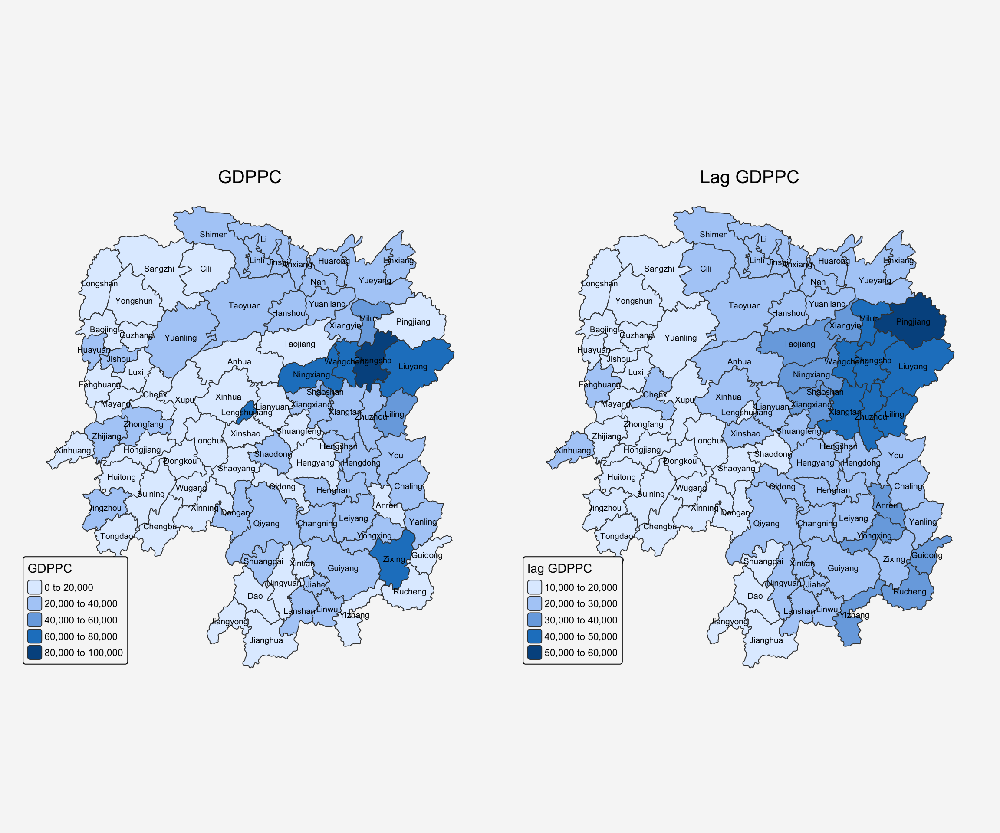
The right map shows the average GDPPC of each county’s neighbors. Pingjiang appears as the darkest region, indicating that its surrounding counties (including Changsha, Liuyang, Miluo, and the Yueyang area) are relatively wealthy, resulting in a higher weighted average GDP per capita for the region.
10.2 Spatial lag as a sum of neighboring values
We can calculate spatial lag as a sum of neighboring values by assigning binary weights. This requires us to go back to our neighbors list, then apply a function that will assign binary weights( Binary weights (style="B") - Each neighbor just gets 1, non-neighbors get 0.), then we use glist = in the nb2listw function to explicitly assign these weights.
We start by applying a function that will assign a value of 1 per each neighbor. This is done with lapply, which we have been using to manipulate the neighbors structure throughout the past notebooks. Basically it applies a function across each value in the neighbors structure.
b_weights <- lapply(wm_q, function(x) 0*x + 1)
b_weights2 <- nb2listw(wm_q,
glist = b_weights, #Each neighbor gets weight = 1
style = "B") # Same result:
# neighbors get 1, non-neighbors get 0
b_weights2Characteristics of weights list object:
Neighbour list object:
Number of regions: 88
Number of nonzero links: 448
Percentage nonzero weights: 5.785124
Average number of links: 5.090909
Weights style: B
Weights constants summary:
n nn S0 S1 S2
B 88 7744 448 896 10224With the proper weights assigned, we can use lag.listw to compute a lag variable from our weight and GDPPC.
lag_sum <- list(hunan$NAME_3, lag.listw(b_weights2, hunan$GDPPC))
lag.res <- as.data.frame(lag_sum)
colnames(lag.res) <- c("NAME_3", "lag_sum GDPPC")First, let us examine the result by using the code chunk below.
lag_sum[[1]]
[1] "Anxiang" "Hanshou" "Jinshi" "Li"
[5] "Linli" "Shimen" "Liuyang" "Ningxiang"
[9] "Wangcheng" "Anren" "Guidong" "Jiahe"
[13] "Linwu" "Rucheng" "Yizhang" "Yongxing"
[17] "Zixing" "Changning" "Hengdong" "Hengnan"
[21] "Hengshan" "Leiyang" "Qidong" "Chenxi"
[25] "Zhongfang" "Huitong" "Jingzhou" "Mayang"
[29] "Tongdao" "Xinhuang" "Xupu" "Yuanling"
[33] "Zhijiang" "Lengshuijiang" "Shuangfeng" "Xinhua"
[37] "Chengbu" "Dongan" "Dongkou" "Longhui"
[41] "Shaodong" "Suining" "Wugang" "Xinning"
[45] "Xinshao" "Shaoshan" "Xiangxiang" "Baojing"
[49] "Fenghuang" "Guzhang" "Huayuan" "Jishou"
[53] "Longshan" "Luxi" "Yongshun" "Anhua"
[57] "Nan" "Yuanjiang" "Jianghua" "Lanshan"
[61] "Ningyuan" "Shuangpai" "Xintian" "Huarong"
[65] "Linxiang" "Miluo" "Pingjiang" "Xiangyin"
[69] "Cili" "Chaling" "Liling" "Yanling"
[73] "You" "Zhuzhou" "Sangzhi" "Yueyang"
[77] "Qiyang" "Taojiang" "Shaoyang" "Lianyuan"
[81] "Hongjiang" "Hengyang" "Guiyang" "Changsha"
[85] "Taoyuan" "Xiangtan" "Dao" "Jiangyong"
[[2]]
[1] 124236 113624 96573 110950 109081 106244 174988 235079 273907 256221
[11] 98013 104050 102846 92017 133831 158446 141883 119508 150757 153324
[21] 113593 129594 142149 100119 82884 74668 43184 99244 46549 20518
[31] 140576 121601 92069 43258 144567 132119 51694 59024 69349 73780
[41] 94651 100680 69398 52798 140472 118623 180933 82798 83090 97356
[51] 59482 77334 38777 111463 74715 174391 150558 122144 68012 84575
[61] 143045 51394 98279 47671 26360 236917 220631 185290 64640 70046
[71] 126971 144693 129404 284074 112268 203611 145238 251536 108078 238300
[81] 108870 108085 262835 248182 244850 404456 67608 33860The counties add up the GDPPC of their neighbors:
lag.res NAME_3 lag_sum GDPPC
1 Anxiang 124236
2 Hanshou 113624
3 Jinshi 96573
4 Li 110950
5 Linli 109081
6 Shimen 106244
7 Liuyang 174988
8 Ningxiang 235079
9 Wangcheng 273907
10 Anren 256221
11 Guidong 98013
12 Jiahe 104050
13 Linwu 102846
14 Rucheng 92017
15 Yizhang 133831
16 Yongxing 158446
17 Zixing 141883
18 Changning 119508
19 Hengdong 150757
20 Hengnan 153324
21 Hengshan 113593
22 Leiyang 129594
23 Qidong 142149
24 Chenxi 100119
25 Zhongfang 82884
26 Huitong 74668
27 Jingzhou 43184
28 Mayang 99244
29 Tongdao 46549
30 Xinhuang 20518
31 Xupu 140576
32 Yuanling 121601
33 Zhijiang 92069
34 Lengshuijiang 43258
35 Shuangfeng 144567
36 Xinhua 132119
37 Chengbu 51694
38 Dongan 59024
39 Dongkou 69349
40 Longhui 73780
41 Shaodong 94651
42 Suining 100680
43 Wugang 69398
44 Xinning 52798
45 Xinshao 140472
46 Shaoshan 118623
47 Xiangxiang 180933
48 Baojing 82798
49 Fenghuang 83090
50 Guzhang 97356
51 Huayuan 59482
52 Jishou 77334
53 Longshan 38777
54 Luxi 111463
55 Yongshun 74715
56 Anhua 174391
57 Nan 150558
58 Yuanjiang 122144
59 Jianghua 68012
60 Lanshan 84575
61 Ningyuan 143045
62 Shuangpai 51394
63 Xintian 98279
64 Huarong 47671
65 Linxiang 26360
66 Miluo 236917
67 Pingjiang 220631
68 Xiangyin 185290
69 Cili 64640
70 Chaling 70046
71 Liling 126971
72 Yanling 144693
73 You 129404
74 Zhuzhou 284074
75 Sangzhi 112268
76 Yueyang 203611
77 Qiyang 145238
78 Taojiang 251536
79 Shaoyang 108078
80 Lianyuan 238300
81 Hongjiang 108870
82 Hengyang 108085
83 Guiyang 262835
84 Changsha 248182
85 Taoyuan 244850
86 Xiangtan 404456
87 Dao 67608
88 Jiangyong 33860Next, we will append the lag_sum GDPPC field into hunan sf data frame by using the code chunk below.
hunan <- left_join(hunan, lag.res)kable(head(hunan,5))| NAME_2 | ID_3 | NAME_3 | ENGTYPE_3 | Shape_Leng | Shape_Area | County | City | avg_wage | deposite | FAI | Gov_Rev | Gov_Exp | GDP | GDPPC | GIO | Loan | NIPCR | Bed | Emp | EmpR | EmpRT | Pri_Stu | Sec_Stu | Household | Household_R | NOIP | Pop_R | RSCG | Pop_T | Agri | Service | Disp_Inc | RORP | ROREmp | lag GDPPC | lag_sum GDPPC | geometry |
|---|---|---|---|---|---|---|---|---|---|---|---|---|---|---|---|---|---|---|---|---|---|---|---|---|---|---|---|---|---|---|---|---|---|---|---|---|---|
| Changde | 21098 | Anxiang | County | 1.869074 | 0.1005619 | Anxiang | Changde | 31935 | 5517.2 | 3541.0 | 243.64 | 1779.5 | 12482.0 | 23667 | 5108.9 | 2806.9 | 7693.7 | 1931 | 336.39 | 270.5 | 205.9 | 19.584 | 17.819 | 148.1 | 135.4 | 53 | 346.0 | 3957.9 | 528.3 | 4524.41 | 14100 | 16610 | 0.6549309 | 0.8041262 | 24847.20 | 124236 | POLYGON ((112.0625 29.75523… |
| Changde | 21100 | Hanshou | County | 2.360691 | 0.1997875 | Hanshou | Changde | 32265 | 7979.0 | 8665.0 | 386.13 | 2062.4 | 15788.0 | 20981 | 13491.0 | 4550.0 | 8269.9 | 2560 | 456.78 | 388.8 | 246.7 | 42.097 | 33.029 | 240.2 | 208.7 | 95 | 553.2 | 4460.5 | 804.6 | 6545.35 | 17727 | 18925 | 0.6875466 | 0.8511756 | 22724.80 | 113624 | POLYGON ((112.2288 29.11684… |
| Changde | 21101 | Jinshi | County City | 1.425620 | 0.0530241 | Jinshi | Changde | 28692 | 4581.7 | 4777.0 | 373.31 | 1148.4 | 8706.9 | 34592 | 10935.0 | 2242.0 | 8169.9 | 848 | 122.78 | 82.1 | 61.7 | 8.723 | 7.592 | 81.9 | 43.7 | 77 | 92.4 | 3683.0 | 251.8 | 2562.46 | 7525 | 19498 | 0.3669579 | 0.6686757 | 24143.25 | 96573 | POLYGON ((111.8927 29.6013,… |
| Changde | 21102 | Li | County | 3.474324 | 0.1890812 | Li | Changde | 32541 | 13487.0 | 16066.0 | 709.61 | 2459.5 | 20322.0 | 24473 | 18402.0 | 6748.0 | 8377.0 | 2038 | 513.44 | 426.8 | 227.1 | 38.975 | 33.938 | 268.5 | 256.0 | 96 | 539.7 | 7110.2 | 832.5 | 7562.34 | 53160 | 18985 | 0.6482883 | 0.8312558 | 27737.50 | 110950 | POLYGON ((111.3731 29.94649… |
| Changde | 21103 | Linli | County | 2.289506 | 0.1145036 | Linli | Changde | 32667 | 564.1 | 7781.2 | 336.86 | 1538.7 | 10355.0 | 25554 | 8214.0 | 358.0 | 8143.1 | 1440 | 307.36 | 272.2 | 100.8 | 23.286 | 18.943 | 129.1 | 157.2 | 99 | 246.6 | 3604.9 | 409.3 | 3583.91 | 7031 | 18604 | 0.6024921 | 0.8856065 | 27270.25 | 109081 | POLYGON ((111.6324 29.76288… |
Now, We can plot both the GDPPC and Spatial Lag Sum GDPPC for comparison using the code chunk below.
lag_sum_gdppc <- tm_shape(hunan) +
tm_polygons(fill = "lag_sum GDPPC") +
tm_text("NAME_3", size=0.6)+
tm_title("Lag sum GDPPC",
position = tm_pos_out("center", "top", "center")) +
tm_layout(
legend.position = c("left", "bottom"),
bg.color = "#f6f6f6",
frame = FALSE)
tmap_arrange(gdppc, lag_sum_gdppc, asp=1, ncol=2)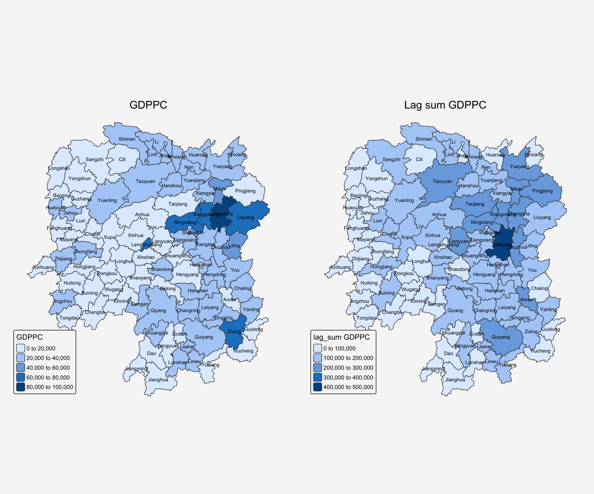
The binary approach considers both ‘quantity’ and ‘quality’ - the number of neighbors determines how many values are summed, while the economic characteristics of those neighbors determine the magnitude of each contribution. Counties with more neighbors have the potential for higher GDPPC values, but the actual wealth levels of those neighbors also influences the final result.
For example, county 85 with 11 neighbors and counties 83 and 86 with 9 neighbors each show that Taoyuan, Guiyang, and Xiangtan have both numerous neighbors and relatively wealthy surrounding areas.
print(which(card(wm_q) == 11))[1] 85print(which(card(wm_q) == 9))[1] 83 86print(hunan$County[c(85, 83, 86)])[1] "Taoyuan" "Guiyang" "Xiangtan"10.3 Spatial Window Average
The spatial window average uses row-standardized weights and includes the diagonal element. To do this in R, we need to go back to the neighbors structure and add the diagonal element before assigning weights.
To add the diagonal element to the neighbour list, we just need to use include.self() from spdep.
wm_qs <- include.self(wm_q)
wm_qsNeighbour list object:
Number of regions: 88
Number of nonzero links: 536
Percentage nonzero weights: 6.921488
Average number of links: 6.090909 Notice that the Number of nonzero links, Percentage nonzero weights and Average number of links are 536, 6.921488 and 6.090909 respectively as compared to wm_q of 448, 5.785124 and 5.090909. The number of nonzero link increased by 88 (536-448).
Let us take a good look at the neighbour list of area [1] by using the code chunk below.
wm_qs[[1]][1] 1 2 3 4 57 85Notice that now [1] has six neighbours instead of five.
Now we obtain weights with nb2listw():
wm_qs <- nb2listw(wm_qs)
wm_qsCharacteristics of weights list object:
Neighbour list object:
Number of regions: 88
Number of nonzero links: 536
Percentage nonzero weights: 6.921488
Average number of links: 6.090909
Weights style: W
Weights constants summary:
n nn S0 S1 S2
W 88 7744 88 30.90265 357.5308Again, we use nb2listw() and glist() to explicitly assign weight values.
Lastly, we just need to create the lag variable from our weight structure and GDPPC variable.
lag_w_avg_gpdpc <- lag.listw(wm_qs,
hunan$GDPPC)
lag_w_avg_gpdpc [1] 24650.50 22434.17 26233.00 27084.60 26927.00 22230.17 47621.20 37160.12
[9] 49224.71 29886.89 26627.50 22690.17 25366.40 25825.75 30329.00 32682.83
[17] 25948.62 23987.67 25463.14 21904.38 23127.50 25949.83 20018.75 19524.17
[25] 18955.00 17800.40 15883.00 18831.33 14832.50 17965.00 17159.89 16199.44
[33] 18764.50 26878.75 23188.86 20788.14 12365.20 15985.00 13764.83 11907.43
[41] 17128.14 14593.62 11644.29 12706.00 21712.29 43548.25 35049.00 16226.83
[49] 19294.40 18156.00 19954.75 18145.17 12132.75 18419.29 14050.83 23619.75
[57] 24552.71 24733.67 16762.60 20932.60 19467.75 18334.00 22541.00 26028.00
[65] 29128.50 46569.00 47576.60 36545.50 20838.50 22531.00 42115.50 27619.00
[73] 27611.33 44523.29 18127.43 28746.38 20734.50 33880.62 14716.38 28516.22
[81] 18086.14 21244.50 29568.80 48119.71 22310.75 43151.60 17133.40 17009.33Next, we will convert the lag variable listw object into a data.frame by using as.data.frame().
lag.list.wm_qs <- list(hunan$NAME_3, lag.listw(wm_qs, hunan$GDPPC))
lag_wm_qs.res <- as.data.frame(lag.list.wm_qs)
colnames(lag_wm_qs.res) <- c("NAME_3", "lag_window_avg GDPPC")
hunan <- left_join(hunan, lag_wm_qs.res)To compare the values of lag GDPPC and Spatial window average, kable() of Knitr package is used to prepare a table using the code chunk below:
hunan %>%
select("County",
"lag GDPPC",
"lag_window_avg GDPPC") %>%
kable()| County | lag GDPPC | lag_window_avg GDPPC | geometry |
|---|---|---|---|
| Anxiang | 24847.20 | 24650.50 | POLYGON ((112.0625 29.75523… |
| Hanshou | 22724.80 | 22434.17 | POLYGON ((112.2288 29.11684… |
| Jinshi | 24143.25 | 26233.00 | POLYGON ((111.8927 29.6013,… |
| Li | 27737.50 | 27084.60 | POLYGON ((111.3731 29.94649… |
| Linli | 27270.25 | 26927.00 | POLYGON ((111.6324 29.76288… |
| Shimen | 21248.80 | 22230.17 | POLYGON ((110.8825 30.11675… |
| Liuyang | 43747.00 | 47621.20 | POLYGON ((113.9905 28.5682,… |
| Ningxiang | 33582.71 | 37160.12 | POLYGON ((112.7181 28.38299… |
| Wangcheng | 45651.17 | 49224.71 | POLYGON ((112.7914 28.52688… |
| Anren | 32027.62 | 29886.89 | POLYGON ((113.1757 26.82734… |
| Guidong | 32671.00 | 26627.50 | POLYGON ((114.1799 26.20117… |
| Jiahe | 20810.00 | 22690.17 | POLYGON ((112.4425 25.74358… |
| Linwu | 25711.50 | 25366.40 | POLYGON ((112.5914 25.55143… |
| Rucheng | 30672.33 | 25825.75 | POLYGON ((113.6759 25.87578… |
| Yizhang | 33457.75 | 30329.00 | POLYGON ((113.2621 25.68394… |
| Yongxing | 31689.20 | 32682.83 | POLYGON ((113.3169 26.41843… |
| Zixing | 20269.00 | 25948.62 | POLYGON ((113.7311 26.16259… |
| Changning | 23901.60 | 23987.67 | POLYGON ((112.6144 26.60198… |
| Hengdong | 25126.17 | 25463.14 | POLYGON ((113.1056 27.21007… |
| Hengnan | 21903.43 | 21904.38 | POLYGON ((112.7599 26.98149… |
| Hengshan | 22718.60 | 23127.50 | POLYGON ((112.607 27.4689, … |
| Leiyang | 25918.80 | 25949.83 | POLYGON ((112.9996 26.69276… |
| Qidong | 20307.00 | 20018.75 | POLYGON ((111.7818 27.0383,… |
| Chenxi | 20023.80 | 19524.17 | POLYGON ((110.2624 28.21778… |
| Zhongfang | 16576.80 | 18955.00 | POLYGON ((109.9431 27.72858… |
| Huitong | 18667.00 | 17800.40 | POLYGON ((109.9419 27.10512… |
| Jingzhou | 14394.67 | 15883.00 | POLYGON ((109.8186 26.75842… |
| Mayang | 19848.80 | 18831.33 | POLYGON ((109.795 27.98008,… |
| Tongdao | 15516.33 | 14832.50 | POLYGON ((109.9294 26.46561… |
| Xinhuang | 20518.00 | 17965.00 | POLYGON ((109.227 27.43733,… |
| Xupu | 17572.00 | 17159.89 | POLYGON ((110.7189 28.30485… |
| Yuanling | 15200.12 | 16199.44 | POLYGON ((110.9652 28.99895… |
| Zhijiang | 18413.80 | 18764.50 | POLYGON ((109.8818 27.60661… |
| Lengshuijiang | 14419.33 | 26878.75 | POLYGON ((111.5307 27.81472… |
| Shuangfeng | 24094.50 | 23188.86 | POLYGON ((112.263 27.70421,… |
| Xinhua | 22019.83 | 20788.14 | POLYGON ((111.3345 28.19642… |
| Chengbu | 12923.50 | 12365.20 | POLYGON ((110.4455 26.69317… |
| Dongan | 14756.00 | 15985.00 | POLYGON ((111.4531 26.86812… |
| Dongkou | 13869.80 | 13764.83 | POLYGON ((110.6622 27.37305… |
| Longhui | 12296.67 | 11907.43 | POLYGON ((110.985 27.65983,… |
| Shaodong | 15775.17 | 17128.14 | POLYGON ((111.9054 27.40254… |
| Suining | 14382.86 | 14593.62 | POLYGON ((110.389 27.10006,… |
| Wugang | 11566.33 | 11644.29 | POLYGON ((110.9878 27.03345… |
| Xinning | 13199.50 | 12706.00 | POLYGON ((111.0736 26.84627… |
| Xinshao | 23412.00 | 21712.29 | POLYGON ((111.6013 27.58275… |
| Shaoshan | 39541.00 | 43548.25 | POLYGON ((112.5391 27.97742… |
| Xiangxiang | 36186.60 | 35049.00 | POLYGON ((112.4549 28.05783… |
| Baojing | 16559.60 | 16226.83 | POLYGON ((109.7015 28.82844… |
| Fenghuang | 20772.50 | 19294.40 | POLYGON ((109.5239 28.19206… |
| Guzhang | 19471.20 | 18156.00 | POLYGON ((109.8968 28.74034… |
| Huayuan | 19827.33 | 19954.75 | POLYGON ((109.5647 28.61712… |
| Jishou | 15466.80 | 18145.17 | POLYGON ((109.8375 28.4696,… |
| Longshan | 12925.67 | 12132.75 | POLYGON ((109.6337 29.62521… |
| Luxi | 18577.17 | 18419.29 | POLYGON ((110.1067 28.41835… |
| Yongshun | 14943.00 | 14050.83 | POLYGON ((110.0003 29.29499… |
| Anhua | 24913.00 | 23619.75 | POLYGON ((111.6034 28.63716… |
| Nan | 25093.00 | 24552.71 | POLYGON ((112.3232 29.46074… |
| Yuanjiang | 24428.80 | 24733.67 | POLYGON ((112.4391 29.1791,… |
| Jianghua | 17003.00 | 16762.60 | POLYGON ((111.6461 25.29661… |
| Lanshan | 21143.75 | 20932.60 | POLYGON ((112.2286 25.61123… |
| Ningyuan | 20435.00 | 19467.75 | POLYGON ((112.0715 26.09892… |
| Shuangpai | 17131.33 | 18334.00 | POLYGON ((111.8864 26.11957… |
| Xintian | 24569.75 | 22541.00 | POLYGON ((112.2578 26.0796,… |
| Huarong | 23835.50 | 26028.00 | POLYGON ((112.9242 29.69134… |
| Linxiang | 26360.00 | 29128.50 | POLYGON ((113.5502 29.67418… |
| Miluo | 47383.40 | 46569.00 | POLYGON ((112.9902 29.02139… |
| Pingjiang | 55157.75 | 47576.60 | POLYGON ((113.8436 29.06152… |
| Xiangyin | 37058.00 | 36545.50 | POLYGON ((112.9173 28.98264… |
| Cili | 21546.67 | 20838.50 | POLYGON ((110.8822 29.69017… |
| Chaling | 23348.67 | 22531.00 | POLYGON ((113.7666 27.10573… |
| Liling | 42323.67 | 42115.50 | POLYGON ((113.5673 27.94346… |
| Yanling | 28938.60 | 27619.00 | POLYGON ((113.9292 26.6154,… |
| You | 25880.80 | 27611.33 | POLYGON ((113.5879 27.41324… |
| Zhuzhou | 47345.67 | 44523.29 | POLYGON ((113.2493 28.02411… |
| Sangzhi | 18711.33 | 18127.43 | POLYGON ((110.556 29.40543,… |
| Yueyang | 29087.29 | 28746.38 | POLYGON ((113.343 29.61064,… |
| Qiyang | 20748.29 | 20734.50 | POLYGON ((111.5563 26.81318… |
| Taojiang | 35933.71 | 33880.62 | POLYGON ((112.0508 28.67265… |
| Shaoyang | 15439.71 | 14716.38 | POLYGON ((111.5013 27.30207… |
| Lianyuan | 29787.50 | 28516.22 | POLYGON ((111.6789 28.02946… |
| Hongjiang | 18145.00 | 18086.14 | POLYGON ((110.1441 27.47513… |
| Hengyang | 21617.00 | 21244.50 | POLYGON ((112.7144 26.98613… |
| Guiyang | 29203.89 | 29568.80 | POLYGON ((113.0811 26.04963… |
| Changsha | 41363.67 | 48119.71 | POLYGON ((112.9421 28.03722… |
| Taoyuan | 22259.09 | 22310.75 | POLYGON ((112.0612 29.32855… |
| Xiangtan | 44939.56 | 43151.60 | POLYGON ((113.0426 27.8942,… |
| Dao | 16902.00 | 17133.40 | POLYGON ((111.498 25.81679,… |
| Jiangyong | 16930.00 | 17009.33 | POLYGON ((111.3659 25.39472… |
Now, We can plot both the lag_gdppc and w_ave_gdppc for comparison using the code chunk below:
w_avg_gdppc <- tm_shape(hunan) +
tm_polygons(fill = "lag_window_avg GDPPC") +
tm_text("NAME_3", size=0.6)+
tm_title("Lag Window Avg GDPPC",
position = tm_pos_out("center", "top", "center")) +
tm_layout(
legend.position = c("left", "bottom"),
bg.color = "#f6f6f6",
frame = FALSE)
tmap_arrange(lag_gdppc, w_avg_gdppc, asp=1, ncol=2)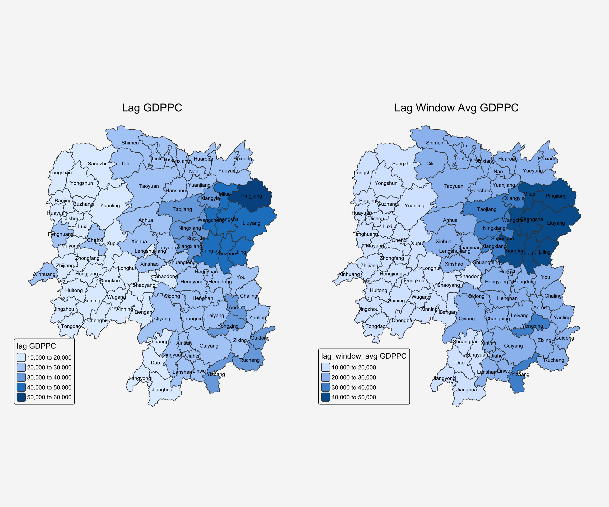
10.4 Spatial Window Sum
The spatial window sum is the counter part of the window average, but without using row-standardized weights.
To add the diagonal element to the neighbour list, we just need to use include.self() from spdep.
wm_qs <- include.self(wm_q)
wm_qsNeighbour list object:
Number of regions: 88
Number of nonzero links: 536
Percentage nonzero weights: 6.921488
Average number of links: 6.090909 Next, we will assign binary weights to the neighbour structure that includes the diagonal element.
b_weights <- lapply(wm_qs, function(x) 0*x + 1)
b_weights[1][[1]]
[1] 1 1 1 1 1 1Notice that now [1] has six neighbours instead of five.
Again, we use nb2listw() and glist() to explicitly assign weight values.
b_weights2 <- nb2listw(wm_qs,
glist = b_weights,
style = "B")
b_weights2Characteristics of weights list object:
Neighbour list object:
Number of regions: 88
Number of nonzero links: 536
Percentage nonzero weights: 6.921488
Average number of links: 6.090909
Weights style: B
Weights constants summary:
n nn S0 S1 S2
B 88 7744 536 1072 14160With our new weight structure, we can compute the lag variable with lag.listw().
w_sum_gdppc <- list(hunan$NAME_3, lag.listw(b_weights2, hunan$GDPPC))
w_sum_gdppc[[1]]
[1] "Anxiang" "Hanshou" "Jinshi" "Li"
[5] "Linli" "Shimen" "Liuyang" "Ningxiang"
[9] "Wangcheng" "Anren" "Guidong" "Jiahe"
[13] "Linwu" "Rucheng" "Yizhang" "Yongxing"
[17] "Zixing" "Changning" "Hengdong" "Hengnan"
[21] "Hengshan" "Leiyang" "Qidong" "Chenxi"
[25] "Zhongfang" "Huitong" "Jingzhou" "Mayang"
[29] "Tongdao" "Xinhuang" "Xupu" "Yuanling"
[33] "Zhijiang" "Lengshuijiang" "Shuangfeng" "Xinhua"
[37] "Chengbu" "Dongan" "Dongkou" "Longhui"
[41] "Shaodong" "Suining" "Wugang" "Xinning"
[45] "Xinshao" "Shaoshan" "Xiangxiang" "Baojing"
[49] "Fenghuang" "Guzhang" "Huayuan" "Jishou"
[53] "Longshan" "Luxi" "Yongshun" "Anhua"
[57] "Nan" "Yuanjiang" "Jianghua" "Lanshan"
[61] "Ningyuan" "Shuangpai" "Xintian" "Huarong"
[65] "Linxiang" "Miluo" "Pingjiang" "Xiangyin"
[69] "Cili" "Chaling" "Liling" "Yanling"
[73] "You" "Zhuzhou" "Sangzhi" "Yueyang"
[77] "Qiyang" "Taojiang" "Shaoyang" "Lianyuan"
[81] "Hongjiang" "Hengyang" "Guiyang" "Changsha"
[85] "Taoyuan" "Xiangtan" "Dao" "Jiangyong"
[[2]]
[1] 147903 134605 131165 135423 134635 133381 238106 297281 344573 268982
[11] 106510 136141 126832 103303 151645 196097 207589 143926 178242 175235
[21] 138765 155699 160150 117145 113730 89002 63532 112988 59330 35930
[31] 154439 145795 112587 107515 162322 145517 61826 79925 82589 83352
[41] 119897 116749 81510 63530 151986 174193 210294 97361 96472 108936
[51] 79819 108871 48531 128935 84305 188958 171869 148402 83813 104663
[61] 155742 73336 112705 78084 58257 279414 237883 219273 83354 90124
[71] 168462 165714 165668 311663 126892 229971 165876 271045 117731 256646
[81] 126603 127467 295688 336838 267729 431516 85667 51028Next, we will convert the lag variable listw object into a data.frame by using as.data.frame(), and append it to the hunan sf dataset:
w_sum_gdppc.res <- as.data.frame(w_sum_gdppc)
colnames(w_sum_gdppc.res) <- c("NAME_3", "w_sum GDPPC")
hunan <- left_join(hunan, w_sum_gdppc.res)To compare the values of lag GDPPC and Spatial window average, kable() of Knitr package is used to prepare a table using the code chunk below.
hunan %>%
select("County", "lag_sum GDPPC", "w_sum GDPPC") %>%
kable()| County | lag_sum GDPPC | w_sum GDPPC | geometry |
|---|---|---|---|
| Anxiang | 124236 | 147903 | POLYGON ((112.0625 29.75523… |
| Hanshou | 113624 | 134605 | POLYGON ((112.2288 29.11684… |
| Jinshi | 96573 | 131165 | POLYGON ((111.8927 29.6013,… |
| Li | 110950 | 135423 | POLYGON ((111.3731 29.94649… |
| Linli | 109081 | 134635 | POLYGON ((111.6324 29.76288… |
| Shimen | 106244 | 133381 | POLYGON ((110.8825 30.11675… |
| Liuyang | 174988 | 238106 | POLYGON ((113.9905 28.5682,… |
| Ningxiang | 235079 | 297281 | POLYGON ((112.7181 28.38299… |
| Wangcheng | 273907 | 344573 | POLYGON ((112.7914 28.52688… |
| Anren | 256221 | 268982 | POLYGON ((113.1757 26.82734… |
| Guidong | 98013 | 106510 | POLYGON ((114.1799 26.20117… |
| Jiahe | 104050 | 136141 | POLYGON ((112.4425 25.74358… |
| Linwu | 102846 | 126832 | POLYGON ((112.5914 25.55143… |
| Rucheng | 92017 | 103303 | POLYGON ((113.6759 25.87578… |
| Yizhang | 133831 | 151645 | POLYGON ((113.2621 25.68394… |
| Yongxing | 158446 | 196097 | POLYGON ((113.3169 26.41843… |
| Zixing | 141883 | 207589 | POLYGON ((113.7311 26.16259… |
| Changning | 119508 | 143926 | POLYGON ((112.6144 26.60198… |
| Hengdong | 150757 | 178242 | POLYGON ((113.1056 27.21007… |
| Hengnan | 153324 | 175235 | POLYGON ((112.7599 26.98149… |
| Hengshan | 113593 | 138765 | POLYGON ((112.607 27.4689, … |
| Leiyang | 129594 | 155699 | POLYGON ((112.9996 26.69276… |
| Qidong | 142149 | 160150 | POLYGON ((111.7818 27.0383,… |
| Chenxi | 100119 | 117145 | POLYGON ((110.2624 28.21778… |
| Zhongfang | 82884 | 113730 | POLYGON ((109.9431 27.72858… |
| Huitong | 74668 | 89002 | POLYGON ((109.9419 27.10512… |
| Jingzhou | 43184 | 63532 | POLYGON ((109.8186 26.75842… |
| Mayang | 99244 | 112988 | POLYGON ((109.795 27.98008,… |
| Tongdao | 46549 | 59330 | POLYGON ((109.9294 26.46561… |
| Xinhuang | 20518 | 35930 | POLYGON ((109.227 27.43733,… |
| Xupu | 140576 | 154439 | POLYGON ((110.7189 28.30485… |
| Yuanling | 121601 | 145795 | POLYGON ((110.9652 28.99895… |
| Zhijiang | 92069 | 112587 | POLYGON ((109.8818 27.60661… |
| Lengshuijiang | 43258 | 107515 | POLYGON ((111.5307 27.81472… |
| Shuangfeng | 144567 | 162322 | POLYGON ((112.263 27.70421,… |
| Xinhua | 132119 | 145517 | POLYGON ((111.3345 28.19642… |
| Chengbu | 51694 | 61826 | POLYGON ((110.4455 26.69317… |
| Dongan | 59024 | 79925 | POLYGON ((111.4531 26.86812… |
| Dongkou | 69349 | 82589 | POLYGON ((110.6622 27.37305… |
| Longhui | 73780 | 83352 | POLYGON ((110.985 27.65983,… |
| Shaodong | 94651 | 119897 | POLYGON ((111.9054 27.40254… |
| Suining | 100680 | 116749 | POLYGON ((110.389 27.10006,… |
| Wugang | 69398 | 81510 | POLYGON ((110.9878 27.03345… |
| Xinning | 52798 | 63530 | POLYGON ((111.0736 26.84627… |
| Xinshao | 140472 | 151986 | POLYGON ((111.6013 27.58275… |
| Shaoshan | 118623 | 174193 | POLYGON ((112.5391 27.97742… |
| Xiangxiang | 180933 | 210294 | POLYGON ((112.4549 28.05783… |
| Baojing | 82798 | 97361 | POLYGON ((109.7015 28.82844… |
| Fenghuang | 83090 | 96472 | POLYGON ((109.5239 28.19206… |
| Guzhang | 97356 | 108936 | POLYGON ((109.8968 28.74034… |
| Huayuan | 59482 | 79819 | POLYGON ((109.5647 28.61712… |
| Jishou | 77334 | 108871 | POLYGON ((109.8375 28.4696,… |
| Longshan | 38777 | 48531 | POLYGON ((109.6337 29.62521… |
| Luxi | 111463 | 128935 | POLYGON ((110.1067 28.41835… |
| Yongshun | 74715 | 84305 | POLYGON ((110.0003 29.29499… |
| Anhua | 174391 | 188958 | POLYGON ((111.6034 28.63716… |
| Nan | 150558 | 171869 | POLYGON ((112.3232 29.46074… |
| Yuanjiang | 122144 | 148402 | POLYGON ((112.4391 29.1791,… |
| Jianghua | 68012 | 83813 | POLYGON ((111.6461 25.29661… |
| Lanshan | 84575 | 104663 | POLYGON ((112.2286 25.61123… |
| Ningyuan | 143045 | 155742 | POLYGON ((112.0715 26.09892… |
| Shuangpai | 51394 | 73336 | POLYGON ((111.8864 26.11957… |
| Xintian | 98279 | 112705 | POLYGON ((112.2578 26.0796,… |
| Huarong | 47671 | 78084 | POLYGON ((112.9242 29.69134… |
| Linxiang | 26360 | 58257 | POLYGON ((113.5502 29.67418… |
| Miluo | 236917 | 279414 | POLYGON ((112.9902 29.02139… |
| Pingjiang | 220631 | 237883 | POLYGON ((113.8436 29.06152… |
| Xiangyin | 185290 | 219273 | POLYGON ((112.9173 28.98264… |
| Cili | 64640 | 83354 | POLYGON ((110.8822 29.69017… |
| Chaling | 70046 | 90124 | POLYGON ((113.7666 27.10573… |
| Liling | 126971 | 168462 | POLYGON ((113.5673 27.94346… |
| Yanling | 144693 | 165714 | POLYGON ((113.9292 26.6154,… |
| You | 129404 | 165668 | POLYGON ((113.5879 27.41324… |
| Zhuzhou | 284074 | 311663 | POLYGON ((113.2493 28.02411… |
| Sangzhi | 112268 | 126892 | POLYGON ((110.556 29.40543,… |
| Yueyang | 203611 | 229971 | POLYGON ((113.343 29.61064,… |
| Qiyang | 145238 | 165876 | POLYGON ((111.5563 26.81318… |
| Taojiang | 251536 | 271045 | POLYGON ((112.0508 28.67265… |
| Shaoyang | 108078 | 117731 | POLYGON ((111.5013 27.30207… |
| Lianyuan | 238300 | 256646 | POLYGON ((111.6789 28.02946… |
| Hongjiang | 108870 | 126603 | POLYGON ((110.1441 27.47513… |
| Hengyang | 108085 | 127467 | POLYGON ((112.7144 26.98613… |
| Guiyang | 262835 | 295688 | POLYGON ((113.0811 26.04963… |
| Changsha | 248182 | 336838 | POLYGON ((112.9421 28.03722… |
| Taoyuan | 244850 | 267729 | POLYGON ((112.0612 29.32855… |
| Xiangtan | 404456 | 431516 | POLYGON ((113.0426 27.8942,… |
| Dao | 67608 | 85667 | POLYGON ((111.498 25.81679,… |
| Jiangyong | 33860 | 51028 | POLYGON ((111.3659 25.39472… |
Lastly, plot the lag_sum GDPPC and w_sum_gdppc maps next to each other for quick comparison.
w_sum_gdppc <- tm_shape(hunan) +
tm_polygons(fill = "w_sum GDPPC") +
tm_text("NAME_3", size=0.6)+
tm_title("Window Sum GDPPC",
position = tm_pos_out("center", "top", "center")) +
tm_layout(
legend.position = c("left", "bottom"),
bg.color = "#f6f6f6",
frame = FALSE)
tmap_arrange(lag_sum_gdppc, w_sum_gdppc, asp=1, ncol=2)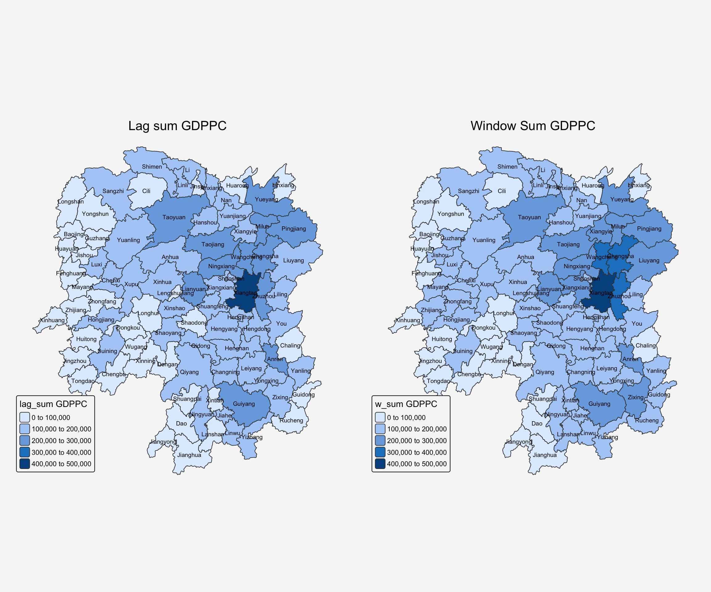
11 Reference
- Kam, T.S. (2025). Spatial Weights and Applications